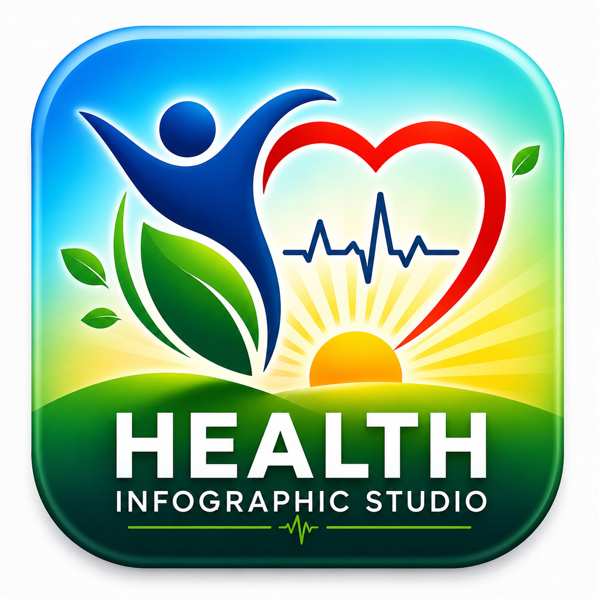

<!doctype html>
<html lang="en">
<head>
<meta charset="utf-8"><meta name="viewport" content="width=device-width,initial-scale=1"><meta name="theme-color" content="#087f8c"><link rel="manifest" href="./manifest-2.4.webmanifest"><link rel="icon" type="image/png" sizes="192x192" href="./app-icon-192.png"><link rel="icon" type="image/png" sizes="512x512" href="./app-icon-512.png"><link rel="apple-touch-icon" sizes="180x180" href="./apple-touch-icon.png">
<title>Health Infographic Studio 2.4 Final Release</title>
<style>
:root{font-family:"Segoe UI",Arial,sans-serif;color:#eaf6fb;background:#07131c}*{box-sizing:border-box}
body{margin:0;background:radial-gradient(circle at 80% 0,#173a4b,transparent 38rem),#07131c}
.app{display:grid;grid-template-columns:350px minmax(0,1fr);gap:24px;max-width:1440px;margin:auto;padding:24px;min-height:100vh}
.controls{align-self:start;background:#0c1e29;border:1px solid #284454;border-radius:20px;padding:22px;box-shadow:0 18px 50px #0006}
.eyebrow{display:inline-block;border:1px solid #356074;border-radius:999px;padding:5px 9px;color:#8edbec;font-size:11px;font-weight:800}
.brand-header{display:grid;grid-template-columns:64px 1fr;gap:12px;align-items:center;margin-bottom:8px}.app-logo{width:64px;height:64px;display:block;object-fit:contain;border-radius:14px;border:1px solid #355668;background:#091720;box-shadow:0 8px 24px #0005}.brand-copy h1{margin:7px 0 3px}.brand-copy .sub{margin:0}
h1{font-size:22px;margin:14px 0 5px}.sub{color:#91aebb;font-size:13px;line-height:1.45;margin:0 0 18px}
label{display:block;color:#b8d2dc;font-size:11px;font-weight:800;letter-spacing:.08em;text-transform:uppercase;margin:14px 0 7px}
select,input,button{width:100%;border:1px solid #355668;background:#091720;color:#edfaff;border-radius:11px;padding:11px;font:inherit}
button{cursor:pointer;font-weight:800;margin-top:10px}button.primary{background:linear-gradient(135deg,#14b88a,#087a68);border-color:#5be1bd}button:disabled{opacity:.42;cursor:not-allowed}
.status{margin-top:14px;padding:12px;border:1px solid #31505f;border-radius:11px;color:#94afba;font-size:12px;line-height:1.45;white-space:pre-line}
.status.good{border-color:#299073;color:#91efd6}.status.bad{border-color:#a44457;color:#ffb3c0}.preview{display:flex;justify-content:center;align-items:flex-start}
.navrow{display:grid;grid-template-columns:1fr 1fr;gap:8px}.navrow.three{grid-template-columns:1fr 1fr 1fr}.navrow button{margin-top:0;padding:8px;font-size:12px}
.qa{margin-top:12px;border:1px solid #31505f;border-radius:11px;overflow:hidden;font-size:11px}.qa h2{font-size:11px;letter-spacing:.08em;margin:0;padding:9px 11px;background:#102735;color:#b9dbe6}.qa-row{display:grid;grid-template-columns:92px 1fr;gap:7px;padding:6px 10px;border-top:1px solid #243f4d}.qa-row span{color:#87a6b3}.qa-row b{font-weight:700;color:#d7eaf1}.qa-row .pass{color:#77e2c2}.qa-row .fail{color:#ff9eb0}
.ops{margin-top:12px;border:1px solid #31505f;border-radius:11px;padding:10px;font-size:11px}.ops h2{font-size:11px;letter-spacing:.08em;margin:0 0 8px;color:#b9dbe6}.ops-grid{display:grid;grid-template-columns:80px 1fr;gap:5px 8px}.ops-grid span{color:#87a6b3}.ops-grid b{overflow-wrap:anywhere}.inline-check{display:flex;align-items:center;gap:8px;margin:9px 0;color:#b8d2dc}.inline-check input{width:auto;margin:0}.compact{font-size:11px;padding:9px}
#acceptanceResult{position:fixed;inset:24px;z-index:9999;background:#07131c;color:#dff8ff;border:2px solid #35b9a3;border-radius:18px;padding:28px;white-space:pre-wrap;font:700 18px/1.5 Consolas,monospace;overflow:auto}
.frame{width:min(100%,675px);padding:11px;background:#071018;border:1px solid #274352;border-radius:18px;box-shadow:0 22px 60px #0008}
canvas{display:block;width:100%;height:auto;background:#fff;border-radius:7px}.note{font-size:11px;color:#7894a0;margin-top:14px}
@media(max-width:900px){.app{grid-template-columns:1fr;padding:12px}.preview{order:-1}}

.mobile-actions{display:grid;grid-template-columns:1fr 1fr;gap:8px;margin-top:10px}
.mobile-actions button{margin-top:0}
.mobile-actions .wide{grid-column:1/-1}
.mobile-web{margin-top:12px;border:1px solid #31505f;border-radius:11px;padding:10px;font-size:11px}
.mobile-web h2{font-size:11px;letter-spacing:.08em;margin:0 0 8px;color:#b9dbe6}
.mobile-web .row{display:grid;grid-template-columns:1fr auto;gap:8px;align-items:end}
.mobile-web .row button{width:auto;margin-top:0;white-space:nowrap}
.mobile-web-status{margin-top:8px;color:#91aebb;line-height:1.4}
.advanced{margin-top:12px;border:1px solid #31505f;border-radius:11px;padding:10px;font-size:11px}
.advanced summary{cursor:pointer;color:#b9dbe6;font-weight:800;letter-spacing:.08em;list-style:none}
.advanced summary::-webkit-details-marker{display:none}.advanced summary::after{content:"＋";float:right}.advanced[open] summary::after{content:"−"}
.delivery-grid{display:grid;grid-template-columns:92px 1fr;gap:5px 8px;margin-top:10px}.delivery-grid span{color:#87a6b3}.delivery-grid b{overflow-wrap:anywhere}
@media(max-width:900px){
  .controls{position:static}
  .frame{width:100%}
}
@media(max-width:640px){
  .app{display:flex;flex-direction:column;padding:8px;gap:10px}
  .controls{order:0;padding:12px;border-radius:14px}
  .preview{order:1}
  .frame{padding:6px;border-radius:12px}
  .mobile-actions{grid-template-columns:1fr 1fr}
  .mobile-actions .wide{grid-column:1/-1}
  .ops,.qa,.mobile-web{font-size:10.5px}
  label{margin-top:10px}
  button,select,input{padding:10px;min-height:44px}
  .brand-header{grid-template-columns:52px 1fr;gap:10px}.app-logo{width:52px;height:52px;border-radius:12px}.brand-copy h1{font-size:20px;margin:5px 0 2px}.brand-copy .sub{font-size:11.5px}
}


#installApp{background:linear-gradient(135deg,#176fcb,#0b4f9c);border-color:#65a9ef;color:#fff}
#installApp.install-ready{box-shadow:0 0 0 2px #4aa8ff55,0 8px 20px #0005}

</style>
</head>
<body>
<main class="app">
<aside class="controls">
<div class="brand-header"><div class="brand-copy"><span class="eyebrow">2.4 · HEALTH-FIRST CALENDAR CANDIDATE</span><h1>Health Infographic Studio</h1><p class="sub">Frozen 1.2 composition · 1080 × 1350 English PNG</p></div></div>
<label for="yearSelect">Year</label><select id="yearSelect"></select>
<label for="datePicker">Date</label><input id="datePicker" type="date">
<div class="navrow three"><button id="prevDay">← Previous</button><button id="today">Today</button><button id="nextDay">Next →</button></div>
<label for="monthFilter">Month</label><select id="monthFilter"></select>
<label for="topicSearch">Topic search</label><input id="topicSearch" type="search" placeholder="Search title or category">
<label for="topic">Daily topic</label><select id="topic"></select>
<label for="palette">Colour palette</label><select id="palette"></select>

<div class="mobile-actions">
  <button id="generateToday" class="primary wide">Generate Today&apos;s Poster</button>
  <button id="generate">Generate Poster</button>
  <button id="regenerate">Regenerate</button>
  <button id="download" disabled>Download PNG</button>
  <button id="sharePoster" disabled>Share Poster</button>
  <button id="installApp" class="wide" type="button">Install App</button>
</div>
<div id="status" class="status" role="status" aria-live="polite">Loading artwork…</div>
<section class="ops"><h2>OPERATIONS</h2><div class="ops-grid"><span>Status</span><b id="opState">DRAFT</b><span>Date</span><b id="opDate">—</b><span>Topic</span><b id="opTopic">—</b><span>Palette</span><b id="opPalette">—</b><span>QA</span><b id="opQA">Not run</b><span>PNG</span><b id="opPNG">Not prepared</b><span>Make</span><b id="opMake">Not configured</b><span>History</span><b id="opHistory">0 records</b></div></section>
<details class="advanced"><summary>ADVANCED / AUTOMATION</summary>
<section class="ops"><h2>MAKE HANDOFF · PNG + METADATA</h2><label class="inline-check"><input id="makeEnabled" type="checkbox"> Enable Make</label><label for="makeUrl">Webhook URL</label><input id="makeUrl" class="compact" type="url" autocomplete="off" placeholder="https://hook..."><div class="navrow"><button id="testMake">Validate Configuration</button><button id="clearMake">Clear Webhook</button></div><button id="sendMake" disabled>Send to Make</button><button id="retryMake" disabled>Retry Make Handoff</button><div class="delivery-grid"><span>Delivery</span><b id="deliveryStatus">NOT_SENT</b><span>Last handoff</span><b id="deliveryLast">—</b><span>Attempts</span><b id="deliveryAttempts">0 / 3</b></div></section>
<section class="mobile-web">
  <h2>ARTWORK FALLBACK</h2>
  <label for="assetBaseUrl">Artwork base URL (optional)</label>
  <div class="row">
    <input id="assetBaseUrl" class="compact" type="url" placeholder="https://your-site.example/artwork/">
    <button id="saveAssetBase">Save</button>
  </div>
  <div class="mobile-web-status" id="mobileWebStatus">
    Uses ./artwork/ when available; otherwise loads the public GitHub artwork safely.
  </div>
</section>
</details>
<section class="qa"><h2>PRODUCTION QA</h2><div id="qaRows"></div></section>
<p class="note">Topic, date, palette, content version and artwork version are part of the generated-state fingerprint. Any change disables download.</p>
</aside>
<section class="preview"><div class="frame"><canvas id="poster" width="1080" height="1350" aria-label="Health awareness poster"></canvas></div></section>
</main>
<script>
'use strict';
window.addEventListener('error',e=>{const s=document.getElementById('status');if(s){s.className='status bad';s.textContent=`STARTUP ERROR: ${e.message} · line ${e.lineno}`};document.title=`STARTUP ERROR: ${e.message}`});
const CONTENT_VERSION='2.1.0-health-first-calendar',ARTWORK_VERSION='2.0-production-artwork-1',RENDERER_VERSION='2.4-final-release.0';
const palettes={
clinical:{name:'Clinical Blue–Green',primary:'#087f8c',deep:'#075164',accent:'#35b9a3',soft:'#eaf7f5',line:'#aadbd6'},
emerald:{name:'Emerald Green',primary:'#087447',deep:'#075136',accent:'#76ae36',soft:'#eef8e9',line:'#b8d8aa'},
ruby:{name:'Deep Ruby',primary:'#a52542',deep:'#68162b',accent:'#db5b70',soft:'#fff0f2',line:'#e5b3bc'},
aqua:{name:'Aqua Blue',primary:'#087fad',deep:'#075176',accent:'#27b6d0',soft:'#eaf8fc',line:'#afdbe8'},
orange:{name:'Warm Orange',primary:'#ce480d',deep:'#842e0c',accent:'#ee8b24',soft:'#fff3e9',line:'#edc2a4'},
violet:{name:'Violet',primary:'#7043a0',deep:'#44256c',accent:'#a969ce',soft:'#f5effb',line:'#ceb8de'}};
const crops={hero:[15,14,956,623],a1:[15,648,482,450],a2:[509,648,462,450],a3:[15,1107,482,429],a4:[509,1107,462,429]};
const REFERENCE_TOPICS=[
{id:'hepatitis',date:'28 JULY 2026',category:'HEALTH AWARENESS MESSAGE',authority:'WHO OBSERVANCE',title:'WORLD HEPATITIS DAY',heroSummary:'Healthy liver, healthy life. Small daily choices can prevent liver disease. Test early, protect yourself and act now for a better tomorrow.',closing:'Small steps today, a healthier liver tomorrow.',emphasis:'Take care of your liver; it takes care of you.',palette:'orange',art:'art-hepatitis-v1.png',actions:[
['EAT BALANCED MEALS DAILY','Choose fresh fruits, vegetables, whole grains and lean proteins. Limit oily, fried and highly processed foods.'],['STAY PHYSICALLY ACTIVE','Be active for at least 30 minutes every day. Regular exercise supports liver function and overall well-being.'],['GET REGULAR CHECK-UPS','Ask about liver testing when appropriate. Early detection and timely care can prevent serious liver damage.'],['SPREAD AWARENESS','Hepatitis can be prevented. Vaccinate, practise good hygiene and avoid sharing personal items.']]},
{id:'heart',date:'29 SEPTEMBER 2026',category:'HEART HEALTH MESSAGE',authority:'GLOBAL HEALTH OBSERVANCE',title:'WORLD HEART DAY',heroSummary:'A healthy heart supports a longer, stronger life. Build protective habits, know your health numbers and seek timely care.',closing:'Small daily steps today, a stronger heart tomorrow.',emphasis:'Take care of your heart; it takes care of you.',palette:'clinical',art:'art-heart-v1.png',actions:[
['STAY ACTIVE','Aim for at least 30 minutes of moderate physical activity on most days. Regular movement strengthens the heart.'],['EAT HEART-HEALTHY','Choose vegetables, fruit, whole grains, pulses, nuts and healthy oils. Limit excess salt and saturated fat.'],['REST AND RESET','Manage stress and aim for 7–8 hours of restorative sleep. Calm breathing can support daily well-being.'],['KNOW YOUR NUMBERS','Check blood pressure, blood sugar and cholesterol regularly. Early action can prevent complications.']]},
{id:'blood',date:'14 JUNE 2026',category:'DONOR HEALTH MESSAGE',authority:'WHO OBSERVANCE',title:'WORLD BLOOD DONOR DAY',heroSummary:'Safe voluntary blood donors keep essential care moving. One donation can support several patients and offer hope.',closing:'Give blood. Give hope. Help save lives.',emphasis:'Safe donors strengthen healthy communities.',palette:'ruby',art:'art-blood-v1.png',actions:[
['CHECK ELIGIBILITY','Confirm age, weight and health requirements with the blood centre. Answer screening questions honestly.'],['PREPARE WELL','Sleep well, eat a healthy meal and drink enough water before donation. Avoid arriving on an empty stomach.'],['DONATE SAFELY','Use a licensed blood centre where trained staff follow sterile procedures and monitor your well-being.'],['RECOVER AND RETURN','Rest, hydrate and follow post-donation advice. Return only after the recommended interval.']]},
{id:'yoga',date:'21 JUNE 2026',category:'WHOLE-PERSON WELLNESS',authority:'UN OBSERVANCE',title:'INTERNATIONAL DAY OF YOGA',heroSummary:'Gentle, regular yoga can support mobility, balance, breathing and mental well-being when practised safely.',closing:'Move with awareness. Breathe with ease.',emphasis:'Consistency matters more than intensity.',palette:'violet',art:'art-yoga-v1.png',actions:[
['BEGIN GENTLY','Choose beginner-friendly movements and progress at a comfortable pace. Stop if you feel pain or dizziness.'],['BREATHE STEADILY','Coordinate slow breathing with movement. Never strain, force the breath or hold it for long periods.'],['PRACTISE REGULARLY','Short, consistent sessions are more useful than occasional intense practice. Build a realistic routine.'],['ADAPT SAFELY','Seek qualified guidance if pregnant, injured, older or living with a health condition.']]},
{id:'mental',date:'10 OCTOBER 2026',category:'MENTAL HEALTH MESSAGE',authority:'WHO OBSERVANCE',title:'WORLD MENTAL HEALTH DAY',heroSummary:'Mental health is health. Connection, daily care and early professional support can make recovery possible.',closing:'Listen without judgement. Reach out with care.',emphasis:'Asking for help is a sign of strength.',palette:'aqua',art:'art-mental-v1.png',actions:[
['STAY CONNECTED','Make time for safe, supportive conversations with people you trust. Listen with patience and without judgement.'],['PROTECT YOUR ROUTINE','Regular sleep, nourishing meals, movement and planned breaks support emotional balance.'],['NOTICE WARNING SIGNS','Persistent distress or changes in sleep, appetite, work or daily function deserve attention.'],['ASK FOR HELP','Contact a qualified mental-health professional or local service when distress persists or safety is at risk.']]},
{id:'tobacco',date:'31 MAY 2026',category:'TOBACCO CONTROL MESSAGE',authority:'WHO OBSERVANCE',title:'WORLD NO TOBACCO DAY',heroSummary:'Every tobacco-free day helps your heart, lungs and family. A clear plan and evidence-based support improve success.',closing:'Choose clean air. Choose a tobacco-free life.',emphasis:'Quitting starts healing from the first day.',palette:'ruby',art:'art-tobacco-v1.png',actions:[
['SET A QUIT DATE','Choose a clear date and remove cigarettes, tobacco and related products from your surroundings.'],['KNOW YOUR TRIGGERS','Plan healthy alternatives for stress, social cues and habitual tobacco use. Ask supporters to help.'],['USE PROVEN SUPPORT','Counselling and approved medicines can improve quit success. Seek advice from a qualified clinician.'],['PROTECT OTHERS','Keep homes, vehicles and shared spaces free from tobacco smoke and aerosols.']]},
{id:'nutrition',date:'01 SEPTEMBER 2026',category:'DAILY NUTRITION MESSAGE',authority:'CURATED HEALTH TOPIC',title:'BUILD A BALANCED PLATE',heroSummary:'A varied balanced plate provides energy, fibre and nutrients for growth, immunity and everyday health.',closing:'Better food choices add up—one plate at a time.',emphasis:'Choose variety, balance and sensible portions.',palette:'emerald',art:'art-nutrition-v1.png',actions:[
['FILL HALF WITH PLANTS','Choose colourful vegetables and fruit across meals and seasons. Variety improves fibre and nutrient intake.'],['CHOOSE SMART STAPLES','Prefer whole grains, millets and other fibre-rich carbohydrates in suitable portions.'],['ADD HEALTHY PROTEIN','Include pulses, beans, eggs, fish, dairy or other suitable protein sources across the week.'],['LIMIT PROCESSED FOOD','Reduce excess salt, added sugar and heavily processed snacks. Choose fresh food more often.']]},
{id:'water',date:'15 OCTOBER 2026',category:'WATER AND HYGIENE',authority:'CURATED HEALTH TOPIC',title:'SAFE WATER, HEALTHY HOMES',heroSummary:'Safe water, clean hands, hygienic food preparation and sanitation prevent infections and protect families.',closing:'Clean water and clean hands protect communities.',emphasis:'Safe hygiene is everyone’s responsibility.',palette:'aqua',art:'art-water-v1.png',actions:[
['USE SAFE WATER','Treat water when needed and store it in a clean, covered container. Use a clean utensil to serve it.'],['WASH HANDS WELL','Use soap and running water before food preparation and eating, and after toilet use or cleaning.'],['PREPARE FOOD SAFELY','Keep raw and cooked food separate. Use clean surfaces and cook food thoroughly before serving.'],['IMPROVE SANITATION','Use safe toilets and dispose of household waste hygienically to protect water and living areas.']]}];
const roleFor=(s='')=>{s=s.toLowerCase();for(const [r,keys] of Object.entries({exercise:['active','exercise','move','strength','yoga'],food:['food','meal','nutrition','eat','iron','salt','hydrate','drink'],screening:['check','test','screen','numbers','notice','risk'],vaccination:['vaccin','immun'],hygiene:['hand','clean','wash','sanitation','safe water'],doctor:['care','help','treat','professional','clinic','medical'],sleep:['sleep','rest','stress','wind-down'],prevention:['prevent','protect','avoid','helmet','restraint','cover','remove','limit'],awareness:['aware','support','talk','learn','record','community'],safety:['safe','hazard','emergency','first aid'],maternal:['mother','pregnan','birth','antenatal'],child:['baby','newborn','child','growth','feeding'],donation:['donat','donor'],respiratory:['breath','cough','lung','smoke','ventilation']}))if(keys.some(k=>s.includes(k)))return r;return 'wellness'};
const SOURCE_BY_REFERENCE={hepatitis:'WHO',heart:'RECOGNIZED',blood:'WHO',yoga:'UN',mental:'WHO',tobacco:'WHO',nutrition:'CURATED',water:'CURATED'};
REFERENCE_TOPICS.forEach(t=>{t.sourceType=SOURCE_BY_REFERENCE[t.id];t.actions=t.actions.map((a,i)=>({number:i+1,heading:a[0],description:a[1],artwork:['a1','a2','a3','a4'][i],artworkRole:roleFor(a[0]+' '+a[1])}))});
const FAMILY_SPECS={
heart:'art-heart-v1.png','blood-pressure':'art-blood-pressure-v1.png',diabetes:'art-diabetes-v1.png','healthy-food':'art-nutrition-v1.png',exercise:'art-yoga-v1.png',sleep:'art-sleep-v1.png','mental-health':'art-mental-v1.png',brain:'art-brain-v1.png',lungs:'art-respiratory-health-v1.png',tuberculosis:'art-tuberculosis-v1.png',tobacco:'art-tobacco-v1.png',liver:'art-hepatitis-v1.png',hepatitis:'art-hepatitis-v1.png',alcohol:'art-alcohol-v1.png',kidney:'art-kidney-v1.png','blood-donation':'art-blood-v1.png',vaccination:'art-vaccination-v1.png',doctor:'art-vaccination-v1.png',nurse:'art-vaccination-v1.png',screening:'art-blood-pressure-v1.png',cancer:'art-cancer-v1.png','oral-health':'art-oral-health-v1.png','eye-health':'art-eye-health-v1.png',hearing:'art-hearing-v1.png','maternal-health':'art-maternal-health-v1.png',pregnancy:'art-maternal-health-v1.png',newborn:'art-newborn-v1.png','child-health':'art-child-health-v1.png','adolescent-health':'art-child-health-v1.png','women-health':'art-women-health-v1.png','men-health':'art-men-health-v1.png','healthy-ageing':'art-healthy-ageing-v1.png',yoga:'art-yoga-v1.png',mosquito:'art-malaria-dengue-v1.png','malaria-dengue':'art-malaria-dengue-v1.png','safe-water':'art-water-v1.png','hand-hygiene':'art-hand-hygiene-v1.png',sanitation:'art-sanitation-v1.png','food-safety':'art-food-safety-v1.png','heat-health':'art-heat-health-v1.png','road-safety':'art-road-safety-v1.png','first-aid':'art-first-aid-v1.png','organ-donation':'art-organ-donation-v1.png','occupational-health':'art-occupational-health-v1.png','respiratory-health':'art-respiratory-health-v1.png',anaemia:'art-anaemia-v1.png',nutrition:'art-nutrition-v1.png',blood:'art-blood-v1.png',mental:'art-mental-v1.png',water:'art-water-v1.png',ageing:'art-healthy-ageing-v1.png',oral:'art-oral-health-v1.png',eye:'art-eye-health-v1.png',child:'art-child-health-v1.png',maternal:'art-maternal-health-v1.png',respiratory:'art-respiratory-health-v1.png',heat:'art-heat-health-v1.png',occupational:'art-occupational-health-v1.png','organ-donation-profile':'art-organ-donation-v1.png'};
const EXACT_FAMILIES=new Set(['heart','blood-pressure','diabetes','healthy-food','sleep','mental-health','brain','tuberculosis','tobacco','liver','hepatitis','kidney','blood-donation','vaccination','cancer','oral-health','eye-health','hearing','maternal-health','newborn','child-health','women-health','men-health','healthy-ageing','yoga','malaria-dengue','safe-water','hand-hygiene','sanitation','food-safety','heat-health','road-safety','first-aid','organ-donation','occupational-health','respiratory-health','anaemia','alcohol']);
const FILE_VISUAL_METADATA={
'art-heart-v1.png':{heroRole:'cardiovascular',roles:['exercise','food','sleep','screening']},'art-blood-pressure-v1.png':{heroRole:'blood-pressure',roles:['screening','awareness','food','doctor']},'art-diabetes-v1.png':{heroRole:'diabetes',roles:['food','exercise','screening','doctor']},'art-nutrition-v1.png':{heroRole:'nutrition',roles:['food','food','food','prevention']},'art-yoga-v1.png':{heroRole:'yoga',roles:['wellness','respiratory','exercise','doctor']},'art-mental-v1.png':{heroRole:'mental-health',roles:['awareness','sleep','screening','doctor']},'art-tuberculosis-v1.png':{heroRole:'respiratory-infection',roles:['screening','respiratory','doctor','screening']},'art-tobacco-v1.png':{heroRole:'tobacco',roles:['prevention','prevention','doctor','prevention']},'art-hepatitis-v1.png':{heroRole:'liver',roles:['food','exercise','screening','awareness']},'art-kidney-v1.png':{heroRole:'kidney',roles:['screening','screening','prevention','food']},'art-blood-v1.png':{heroRole:'blood-donation',roles:['screening','food','donation','donation']},'art-vaccination-v1.png':{heroRole:'vaccination',roles:['vaccination','awareness','doctor','vaccination']},'art-cancer-v1.png':{heroRole:'cancer',roles:['prevention','screening','screening','awareness']},'art-oral-health-v1.png':{heroRole:'oral-health',roles:['hygiene','hygiene','food','doctor']},'art-eye-health-v1.png':{heroRole:'eye-health',roles:['screening','prevention','prevention','doctor']},'art-maternal-health-v1.png':{heroRole:'maternal',roles:['maternal','food','screening','maternal']},'art-newborn-v1.png':{heroRole:'newborn',roles:['child','child','hygiene','doctor']},'art-child-health-v1.png':{heroRole:'child',roles:['screening','vaccination','exercise','doctor']},'art-healthy-ageing-v1.png':{heroRole:'healthy-ageing',roles:['exercise','screening','safety','awareness']},'art-malaria-dengue-v1.png':{heroRole:'mosquito-borne',roles:['hygiene','prevention','doctor','awareness']},'art-water-v1.png':{heroRole:'safe-water',roles:['hygiene','hygiene','food','hygiene']},'art-hand-hygiene-v1.png':{heroRole:'hand-hygiene',roles:['hygiene','hygiene','hygiene','prevention']},'art-road-safety-v1.png':{heroRole:'road-safety',roles:['safety','safety','safety','safety']},'art-hearing-v1.png':{heroRole:'hearing',roles:['awareness','prevention','screening','doctor']},'art-sleep-v1.png':{heroRole:'sleep',roles:['sleep','sleep','sleep','doctor']},'art-brain-v1.png':{heroRole:'brain',roles:['awareness','exercise','food','doctor']},'art-women-health-v1.png':{heroRole:'women-health',roles:['screening','screening','food','sleep']},'art-men-health-v1.png':{heroRole:'men-health',roles:['screening','doctor','awareness','screening']},'art-anaemia-v1.png':{heroRole:'anaemia',roles:['food','food','doctor','screening']},'art-first-aid-v1.png':{heroRole:'first-aid',roles:['safety','safety','doctor','safety']},'art-organ-donation-v1.png':{heroRole:'organ-donation',roles:['awareness','awareness','awareness','prevention']},'art-occupational-health-v1.png':{heroRole:'occupational-health',roles:['safety','prevention','safety','awareness']},'art-respiratory-health-v1.png':{heroRole:'respiratory-health',roles:['prevention','respiratory','hygiene','doctor']},'art-food-safety-v1.png':{heroRole:'food-safety',roles:['hygiene','prevention','food','food']},'art-heat-health-v1.png':{heroRole:'heat-health',roles:['food','prevention','doctor','doctor']},'art-sanitation-v1.png':{heroRole:'sanitation',roles:['hygiene','hygiene','hygiene','awareness']},'art-alcohol-v1.png':{heroRole:'alcohol-harm',roles:['prevention','safety','prevention','doctor']}};
const ARTWORK_FAMILIES=Object.fromEntries(Object.entries(FAMILY_SPECS).map(([id,file])=>{const m=FILE_VISUAL_METADATA[file];return [id,{file,resolution:EXACT_FAMILIES.has(id)?'EXACT':'CURATED_RELATED',heroRole:m.heroRole,visualRoles:m.roles,keys:{hero:'hero',action1:'a1',action2:'a2',action3:'a3',action4:'a4'}}]}));
const CANONICAL_PROFILE_FAMILY={'blood-pressure':'blood-pressure',diabetes:'diabetes',cancer:'cancer',tuberculosis:'tuberculosis',mosquito:'malaria-dengue',maternal:'maternal-health',newborn:'newborn',child:'child-health',vaccination:'vaccination',oral:'oral-health',eye:'eye-health',hearing:'hearing',kidney:'kidney',anaemia:'anaemia',sleep:'sleep',ageing:'healthy-ageing','road-safety':'road-safety','first-aid':'first-aid','food-safety':'food-safety',heat:'heat-health','hand-hygiene':'hand-hygiene',respiratory:'respiratory-health',alcohol:'alcohol','organ-donation':'organ-donation',occupational:'occupational-health','women-health':'women-health','men-health':'men-health'};
const A=(h,d)=>[h,d],P=(id,title,family,palette,summary,actions,closing,emphasis,authority='PUBLIC HEALTH MESSAGE',category='HEALTH AWARENESS MESSAGE',sourceType='CURATED')=>({id,title,family:CANONICAL_PROFILE_FAMILY[id]||family,palette,summary,actions,closing,emphasis,authority,category,sourceType});
const PROFILES=[
P('blood-pressure','KNOW YOUR BLOOD PRESSURE','heart','clinical','High blood pressure often has no warning signs. Accurate checks and timely professional care protect the heart, brain and kidneys.',[A('CHECK CORRECTLY','Sit quietly before measurement and use a validated cuff of the correct size.'),A('TRACK RESULTS','Record readings and share repeated high values with a qualified clinician.'),A('REDUCE EXCESS SALT','Choose fresh foods and limit salty packaged foods, pickles and sauces.'),A('TAKE ADVISED CARE','Follow professional advice and do not stop prescribed medicines without guidance.')],'Know your numbers. Protect your future.','Regular checks support early action.'),
P('diabetes','PREVENT AND MANAGE DIABETES','nutrition','aqua','Balanced meals, physical activity, screening and continuing care help prevent or manage diabetes and its complications.',[A('CHOOSE BALANCED MEALS','Prefer vegetables, whole grains, pulses and suitable portions across the day.'),A('MOVE REGULARLY','Build safe physical activity into most days and reduce long sitting periods.'),A('CHECK WHEN ADVISED','Screening is important if you have risk factors or symptoms of high blood sugar.'),A('PROTECT FEET AND EYES','Attend recommended foot, eye, kidney and blood-pressure checks.')],'Small daily choices support steady health.','Know your risk and seek timely care.'),
P('cancer','CANCER AWARENESS SAVES LIVES','mental','ruby','Many cancers can be prevented or detected earlier. Reduce avoidable risks and use evidence-based screening when recommended.',[A('AVOID TOBACCO','Do not smoke or use smokeless tobacco, and reduce second-hand smoke exposure.'),A('NOTICE PERSISTENT CHANGE','Seek professional review for an unexplained change that does not settle.'),A('USE SCREENING','Follow age- and risk-appropriate screening guidance from qualified health services.'),A('SUPPORT WITH DIGNITY','Offer practical, respectful support to people living with cancer.')],'Awareness and early action can save lives.','Prevention, screening and support matter.'),
P('tuberculosis','STOP TUBERCULOSIS','tobacco','ruby','Tuberculosis is preventable and curable with complete medical care. Early testing protects the individual, family and community.',[A('TEST PERSISTENT COUGH','Seek testing for a cough lasting two weeks or more, fever, weight loss or night sweats.'),A('COVER COUGHS','Use respiratory hygiene and improve ventilation in shared indoor spaces.'),A('COMPLETE TREATMENT','Take every prescribed dose for the full course under professional guidance.'),A('SUPPORT CONTACT CHECKS','Household contacts should follow public-health screening advice.')],'Test early. Treat completely. Stop TB.','Care without stigma protects everyone.'),
P('mosquito','PREVENT MOSQUITO-BORNE DISEASE','water','aqua','Dengue and malaria prevention begins by reducing mosquito breeding and avoiding bites. Fever with warning signs needs timely care.',[A('REMOVE STANDING WATER','Empty, scrub or cover water containers every week around homes and workplaces.'),A('PREVENT BITES','Use suitable repellents, protective clothing, screens and bed nets where appropriate.'),A('SEEK FEVER CARE','Get medical advice for persistent fever or warning signs; avoid unsafe self-medication.'),A('ACT AS A COMMUNITY','Join neighbourhood clean-up and vector-control measures consistently.')],'Stop breeding. Prevent bites. Seek care.','Community action reduces mosquito risk.'),
P('maternal','SAFE MOTHERHOOD','mental','violet','Regular antenatal care, balanced nutrition and skilled support improve safety during pregnancy and childbirth.',[A('BOOK CARE EARLY','Begin antenatal care early and attend the recommended schedule of visits.'),A('EAT AND SUPPLEMENT SAFELY','Follow professional advice on diet, iron, folic acid and other supplements.'),A('KNOW WARNING SIGNS','Seek urgent care for bleeding, severe headache, breathing difficulty or reduced fetal movement.'),A('PLAN SKILLED BIRTH','Prepare for delivery at an appropriate facility with skilled care and transport.')],'Respectful care supports safer motherhood.','Every mother deserves timely skilled care.'),
P('newborn','PROTECT NEWBORN HEALTH','mental','aqua','Warmth, feeding support, hygiene and early recognition of illness help newborns thrive during the first weeks of life.',[A('KEEP BABY WARM','Use skin-to-skin contact and appropriate clothing while avoiding overheating.'),A('SUPPORT FEEDING','Seek skilled help for early and effective breastfeeding or feeding concerns.'),A('USE CLEAN CARE','Wash hands before handling the baby and keep cord care clean and dry.'),A('ACT ON DANGER SIGNS','Seek urgent care for poor feeding, fever, low temperature, breathing difficulty or unusual sleepiness.')],'Small protective actions give newborns a safer start.','Early care matters from the first day.'),
P('child','HELP CHILDREN GROW WELL','mental','emerald','Nutritious food, vaccination, responsive care and safe play support healthy childhood growth and development.',[A('TRACK GROWTH','Use regular health visits to review growth, development and feeding.'),A('KEEP VACCINES CURRENT','Follow the national immunization schedule and retain vaccination records.'),A('CREATE SAFE PLAY','Provide active, supervised play and age-appropriate injury protection.'),A('RESPOND EARLY','Seek care for breathing difficulty, dehydration, persistent fever or reduced activity.')],'Healthy childhood builds a stronger future.','Nourish, protect, play and respond.'),
P('vaccination','VACCINATION PROTECTS','blood','clinical','Vaccines prevent serious infectious diseases and protect individuals and communities when given on schedule.',[A('CHECK THE SCHEDULE','Review age- and risk-appropriate vaccines with a qualified health service.'),A('KEEP RECORDS','Store vaccination cards safely and bring them to health visits.'),A('ASK RELIABLE SOURCES','Discuss benefits, expected reactions and concerns with trained health workers.'),A('COMPLETE DOSES','Receive every recommended dose and follow catch-up advice when needed.')],'Vaccination is protection across the life course.','Stay informed. Stay on schedule.'),
P('oral','CARE FOR YOUR MOUTH','nutrition','aqua','Daily oral hygiene, less free sugar and regular dental care protect teeth, gums and overall well-being.',[A('BRUSH TWICE DAILY','Use fluoride toothpaste and clean every tooth surface with gentle technique.'),A('CLEAN BETWEEN TEETH','Use an appropriate interdental method recommended for your needs.'),A('LIMIT SUGARY SNACKS','Reduce frequent sugary drinks and snacks, especially between meals.'),A('GET DENTAL CARE','Seek assessment for pain, swelling, bleeding gums or a persistent mouth lesion.')],'A healthy mouth supports a healthy life.','Daily care prevents avoidable disease.'),
P('eye','PROTECT YOUR VISION','heart','clinical','Regular eye checks, screen breaks and protection from injury help preserve sight throughout life.',[A('CHECK VISION','Arrange eye assessment for blurred vision, headaches or difficulty with daily tasks.'),A('USE SCREEN BREAKS','Look into the distance regularly, blink often and adjust lighting and screen position.'),A('PROTECT EYES','Use appropriate protective eyewear at work, during sport and around chemicals.'),A('ACT ON SUDDEN CHANGE','Sudden vision loss, severe pain or flashes and floaters need urgent assessment.')],'Protect sight today for an independent tomorrow.','Do not ignore sudden visual change.'),
P('hearing','HEALTHY HEARING FOR LIFE','mental','violet','Safe listening and early hearing assessment support communication, learning and social connection.',[A('TURN VOLUME DOWN','Use the lowest comfortable volume and take regular listening breaks.'),A('USE HEARING PROTECTION','Wear suitable protection around loud machinery, music or explosive noise.'),A('AVOID EAR OBJECTS','Do not insert cotton buds, oils or unapproved objects into the ear canal.'),A('CHECK CHANGES EARLY','Seek assessment for persistent ringing, pain, discharge or hearing difficulty.')],'Safe listening protects lifelong connection.','Hear well. Communicate well.'),
P('kidney','CARE FOR YOUR KIDNEYS','water','clinical','Healthy blood pressure, diabetes care, hydration and safe medicine use help protect kidney function.',[A('KNOW YOUR RISK','Ask about kidney checks if you have diabetes, hypertension or a family history.'),A('CONTROL PRESSURE','Monitor blood pressure and follow professional treatment and lifestyle advice.'),A('USE MEDICINES SAFELY','Avoid frequent unsupervised painkiller use and disclose all remedies to clinicians.'),A('HYDRATE SENSIBLY','Drink according to climate, activity and professional advice; avoid excessive sugary drinks.')],'Protect kidney health before symptoms appear.','Screen risk. Act early.'),
P('anaemia','PREVENT IRON-DEFICIENCY ANAEMIA','nutrition','ruby','Iron-rich food, infection prevention and appropriate screening help prevent and manage anaemia safely.',[A('CHOOSE IRON-RICH FOOD','Include pulses, green vegetables, fortified foods and suitable animal sources.'),A('ADD VITAMIN C','Combine plant iron sources with vitamin-C-rich fruit or vegetables.'),A('FOLLOW SUPPLEMENT ADVICE','Use iron and folic acid supplements only as recommended for your group.'),A('CHECK PERSISTENT SYMPTOMS','Fatigue, breathlessness or pallor need assessment rather than self-diagnosis.')],'Strong nutrition supports healthy blood.','Test when needed and treat the cause.'),
P('sleep','SLEEP SUPPORTS HEALTH','mental','violet','Consistent, restorative sleep supports mood, memory, immunity and cardiometabolic health.',[A('KEEP A REGULAR TIME','Use consistent sleep and wake times, including on most weekends.'),A('CREATE A WIND-DOWN','Reduce bright screens, heavy meals and stimulating activity before bed.'),A('MAKE THE ROOM RESTFUL','Keep the sleep space dark, quiet, comfortable and appropriately cool.'),A('SEEK HELP WHEN NEEDED','Persistent insomnia, loud snoring or daytime sleepiness deserves professional review.')],'Protect sleep as part of daily health.','Rest well. Function better.'),
P('ageing','AGE WELL, STAY CONNECTED','yoga','emerald','Physical activity, social connection, preventive care and safe environments support healthy ageing and independence.',[A('BUILD STRENGTH','Include safe strength, balance and mobility activity suited to your ability.'),A('REVIEW HEALTH REGULARLY','Keep up with vision, hearing, dental, medicine and chronic-disease reviews.'),A('PREVENT FALLS','Improve lighting, remove trip hazards and use suitable footwear and support.'),A('STAY CONNECTED','Maintain meaningful social contact and seek help for loneliness or low mood.')],'Healthy ageing is active, connected and supported.','Protect ability and independence.'),
P('road-safety','ROAD SAFETY SAVES LIVES','heart','orange','Safe speed, helmets, seat belts and alert driving prevent severe injuries on every journey.',[A('USE RESTRAINTS','Wear seat belts and use age-appropriate child restraints on every trip.'),A('WEAR A HELMET','Use a correctly fitted, quality helmet on motorcycles and bicycles.'),A('STAY SOBER AND ALERT','Never drive after alcohol or impairing drugs, or when dangerously tired.'),A('CONTROL SPEED','Match speed to limits, traffic, weather and road conditions.')],'Every safe choice protects a life.','Share the road with patience and care.'),
P('first-aid','BE READY FOR AN EMERGENCY','blood','ruby','Basic emergency readiness helps people act quickly and safely while professional help is on the way.',[A('KNOW EMERGENCY NUMBERS','Keep local emergency contacts visible and share clear location information.'),A('CHECK SCENE SAFETY','Protect yourself and others before approaching an injured person.'),A('LEARN BASIC FIRST AID','Use certified training for CPR, bleeding control and recovery positioning.'),A('KEEP A SAFE KIT','Maintain a simple first-aid kit and replace expired or used supplies.')],'Prepared people can make a critical difference.','Call early. Act safely.'),
P('food-safety','KEEP FOOD SAFE','nutrition','orange','Clean preparation, separation, thorough cooking and safe storage reduce food-borne illness.',[A('KEEP HANDS AND SURFACES CLEAN','Wash hands and clean utensils before and during food preparation.'),A('SEPARATE RAW AND COOKED','Use different boards and containers to prevent cross-contamination.'),A('COOK THOROUGHLY','Cook food fully and reheat leftovers until steaming hot.'),A('STORE SAFELY','Refrigerate perishables promptly and discard food with unsafe storage history.')],'Safe food protects every family member.','Clean, separate, cook and store.'),
P('heat','BEAT THE HEAT SAFELY','water','orange','Hot weather can cause dehydration and heat illness. Hydration, shade and early response reduce risk.',[A('DRINK REGULARLY','Use safe fluids through the day and do not wait for severe thirst.'),A('REDUCE PEAK-HEAT EXPOSURE','Reschedule strenuous outdoor activity and rest in shade or cool spaces.'),A('PROTECT HIGH-RISK PEOPLE','Check older adults, infants, outdoor workers and people with chronic illness.'),A('ACT ON HEAT ILLNESS','Confusion, collapse or very high body temperature needs emergency care.')],'Stay cool, hydrated and alert to warning signs.','Heat illness is preventable.'),
P('hand-hygiene','CLEAN HANDS PREVENT INFECTION','water','aqua','Correct hand hygiene interrupts the spread of many infections at home, work and health facilities.',[A('USE SOAP AND WATER','Wash all hand surfaces for at least 20 seconds when hands are visibly dirty.'),A('CLEAN AT KEY TIMES','Clean hands before food, after toilet use, after coughing and before caregiving.'),A('DRY HANDS SAFELY','Use a clean method and keep shared towels hygienic.'),A('CARE FOR SKIN','Use suitable moisturizer if frequent cleaning causes dryness or cracking.')],'Clean hands protect you and others.','Make hand hygiene routine.'),
P('respiratory','PROTECT RESPIRATORY HEALTH','tobacco','clinical','Clean air, vaccination, respiratory hygiene and timely care protect the lungs from preventable harm.',[A('AVOID SMOKE','Keep indoor spaces free from tobacco smoke and reduce harmful fume exposure.'),A('IMPROVE VENTILATION','Increase safe airflow in crowded indoor spaces when practical.'),A('COVER COUGHS','Use a tissue or elbow, dispose of tissues and clean hands promptly.'),A('SEEK BREATHING CARE','Breathing difficulty, blue lips or severe chest pain needs urgent assessment.')],'Protect every breath with cleaner air and early care.','Healthy lungs support active lives.'),
P('alcohol','REDUCE ALCOHOL-RELATED HARM','liver','orange','Less alcohol means lower risk to the liver, heart, mental health, safety and family well-being.',[A('CHOOSE ALCOHOL-FREE DAYS','Plan regular days without alcohol and use non-alcoholic alternatives.'),A('NEVER DRINK AND DRIVE','Arrange safe transport before drinking and protect other road users.'),A('AVOID HIGH-RISK USE','Alcohol is unsafe during pregnancy and with some medicines or health conditions.'),A('ASK FOR SUPPORT','Seek confidential professional help if cutting down is difficult or withdrawal is possible.')],'Reducing alcohol protects health and safety.','Support works; seek help early.'),
P('organ-donation','ORGAN DONATION AWARENESS','blood','emerald','Accurate information and documented family discussion help people make informed decisions about organ donation.',[A('LEARN THE FACTS','Use official transplant and public-health sources for eligibility and consent information.'),A('RECORD YOUR DECISION','Follow the legally recognized process available in your region.'),A('TALK WITH FAMILY','Share your decision clearly so relatives understand your wishes.'),A('REJECT ORGAN TRADE','Use only authorized systems and report suspected commercial exploitation.')],'An informed decision can offer hope.','Choose freely. Record clearly.'),
P('occupational','HEALTH AND SAFETY AT WORK','heart','clinical','Hazard control, protective equipment and early reporting prevent occupational injury and illness.',[A('IDENTIFY HAZARDS','Review physical, chemical, biological and ergonomic risks before work begins.'),A('USE PROTECTION CORRECTLY','Wear task-appropriate protective equipment and maintain it properly.'),A('TAKE ERGONOMIC BREAKS','Adjust workstations, vary posture and use safe lifting technique.'),A('REPORT EARLY','Report exposures, injuries and near misses through workplace systems.')],'Safe work is a shared responsibility.','Prevent hazards before harm occurs.'),
P('women-health','WOMEN’S PREVENTIVE HEALTH','mental','violet','Respectful preventive care across the life course supports women’s physical, reproductive and mental health.',[A('KEEP ROUTINE CHECKS','Use age- and risk-appropriate blood pressure, diabetes and cancer screening.'),A('NOTICE MENSTRUAL CHANGE','Seek assessment for very heavy bleeding, severe pain or persistent cycle changes.'),A('SUPPORT BONE HEALTH','Include weight-bearing activity and appropriate nutrition across adulthood.'),A('PRIORITIZE MENTAL HEALTH','Seek support for persistent anxiety, low mood, violence or overwhelming stress.')],'Every woman deserves informed, respectful care.','Prevention supports lifelong health.'),
P('men-health','MEN’S PREVENTIVE HEALTH','heart','clinical','Routine screening, mental-health support and safer habits help men prevent avoidable illness and disability.',[A('KNOW YOUR NUMBERS','Check blood pressure, blood sugar, weight and cholesterol as advised.'),A('DO NOT IGNORE SYMPTOMS','Seek care for persistent chest, urinary, sexual or unexplained health changes.'),A('PROTECT MENTAL HEALTH','Talk early about distress, substance use or thoughts of self-harm.'),A('USE PREVENTIVE CARE','Follow age- and risk-appropriate vaccination and cancer-screening advice.')],'Early care is a strength, not a weakness.','Make prevention part of routine life.')
];
const REF_BY_MD=new Map(REFERENCE_TOPICS.map(t=>[({'hepatitis':'07-28','heart':'09-29','blood':'06-14','yoga':'06-21','mental':'10-10','tobacco':'05-31','nutrition':'09-01','water':'10-15'})[t.id],t]));
const MONTH_POOLS={
1:['respiratory','blood-pressure','sleep','diabetes','heart','ageing','mental'],2:['cancer','heart','women-health','child','oral','nutrition','mental'],3:['kidney','vaccination','tuberculosis','oral','women-health','nutrition','hearing'],4:['maternal','newborn','vaccination','occupational','first-aid','heat','food-safety'],5:['heat','tobacco','blood-pressure','women-health','men-health','food-safety','hand-hygiene'],6:['blood','yoga','mosquito','water','nutrition','road-safety','mental'],7:['mosquito','water','hepatitis','food-safety','hand-hygiene','child','first-aid'],8:['nutrition','anaemia','mosquito','maternal','vaccination','eye','road-safety'],9:['heart','nutrition','ageing','diabetes','blood-pressure','oral','mental'],10:['mental','water','eye','women-health','men-health','sleep','cancer'],11:['diabetes','respiratory','tuberculosis','organ-donation','occupational','kidney','nutrition'],12:['blood','respiratory','road-safety','mental','alcohol','vaccination','first-aid']};
const REFERENCE_TOPICS_2027=REFERENCE_TOPICS.map(t=>({...t}));
const REF_BY_MD_2027=new Map(REFERENCE_TOPICS_2027.map(t=>[({'hepatitis':'07-28','heart':'09-29','blood':'06-14','yoga':'06-21','mental':'10-10','tobacco':'05-31','nutrition':'09-01','water':'10-15'})[t.id],t]));

// =====================================================================
// 2.4 HEALTH-FIRST CALENDAR CANDIDATE
// Priority: India health observance > world/global health observance
// > unique curated fitness / health message.
// =====================================================================
const HEALTH_OBSERVANCES_COMMON = {
'01-30':{title:'ANTI-LEPROSY DAY — INDIA',topicKey:'respiratory',authority:'INDIA HEALTH OBSERVANCE',sourceType:'GOV_INDIA',priority:1},
'02-04':{title:'WORLD CANCER DAY',topicKey:'cancer',authority:'GLOBAL HEALTH OBSERVANCE',sourceType:'RECOGNIZED',priority:2},
'02-10':{title:'NATIONAL DEWORMING DAY',topicKey:'child',authority:'GOVERNMENT OF INDIA HEALTH CAMPAIGN',sourceType:'GOV_INDIA',priority:1},
'02-15':{title:'INTERNATIONAL CHILDHOOD CANCER DAY',topicKey:'child',authority:'GLOBAL HEALTH OBSERVANCE',sourceType:'RECOGNIZED',priority:2},
'03-03':{title:'WORLD HEARING DAY',topicKey:'hearing',authority:'WHO HEALTH CAMPAIGN',sourceType:'WHO',priority:2},
'03-04':{title:'WORLD OBESITY DAY',topicKey:'nutrition',authority:'GLOBAL HEALTH OBSERVANCE',sourceType:'RECOGNIZED',priority:2},
'03-16':{title:'NATIONAL VACCINATION DAY',topicKey:'vaccination',authority:'WHO INDIA / INDIA HEALTH CAMPAIGN',sourceType:'GOV_INDIA',priority:1},
'03-20':{title:'WORLD ORAL HEALTH DAY',topicKey:'oral',authority:'GLOBAL HEALTH OBSERVANCE',sourceType:'RECOGNIZED',priority:2},
'03-21':{title:'WORLD DOWN SYNDROME DAY',topicKey:'child',authority:'UN HEALTH & INCLUSION OBSERVANCE',sourceType:'UN',priority:2},
'03-24':{title:'WORLD TB DAY',topicKey:'tuberculosis',authority:'WHO GLOBAL PUBLIC HEALTH DAY',sourceType:'WHO',priority:2},
'04-02':{title:'WORLD AUTISM AWARENESS DAY',topicKey:'child',authority:'UN HEALTH & INCLUSION OBSERVANCE',sourceType:'UN',priority:2},
'04-07':{title:'WORLD HEALTH DAY',topicKey:'heart',authority:'WHO GLOBAL PUBLIC HEALTH DAY',sourceType:'WHO',priority:2},
'04-11':{title:'NATIONAL SAFE MOTHERHOOD DAY',topicKey:'maternal',authority:'INDIA MATERNAL HEALTH OBSERVANCE',sourceType:'GOV_INDIA',priority:1},
'04-14':{title:'WORLD CHAGAS DISEASE DAY',topicKey:'mosquito',authority:'WHO GLOBAL PUBLIC HEALTH DAY',sourceType:'WHO',priority:2},
'04-17':{title:'WORLD HAEMOPHILIA DAY',topicKey:'blood',authority:'GLOBAL HEALTH OBSERVANCE',sourceType:'RECOGNIZED',priority:2},
'04-25':{title:'WORLD MALARIA DAY',topicKey:'mosquito',authority:'WHO GLOBAL PUBLIC HEALTH DAY',sourceType:'WHO',priority:2},
'04-28':{title:'WORLD DAY FOR SAFETY & HEALTH AT WORK',topicKey:'occupational',authority:'GLOBAL OCCUPATIONAL HEALTH OBSERVANCE',sourceType:'RECOGNIZED',priority:2},
'05-05':{title:'WORLD HAND HYGIENE DAY',topicKey:'hand-hygiene',authority:'WHO HEALTH CAMPAIGN',sourceType:'WHO',priority:2},
'05-12':{title:'INTERNATIONAL NURSES DAY',topicKey:'vaccination',authority:'GLOBAL HEALTH WORKFORCE OBSERVANCE',sourceType:'RECOGNIZED',priority:2},
'05-17':{title:'WORLD HYPERTENSION DAY',topicKey:'blood-pressure',authority:'GLOBAL HEALTH OBSERVANCE',sourceType:'RECOGNIZED',priority:2},
'05-28':{title:'MENSTRUAL HYGIENE DAY',topicKey:'women-health',authority:'GLOBAL HEALTH OBSERVANCE',sourceType:'RECOGNIZED',priority:2},
'05-31':{title:'WORLD NO TOBACCO DAY',topicKey:'tobacco',authority:'WHO GLOBAL PUBLIC HEALTH DAY',sourceType:'WHO',priority:2},
'06-07':{title:'WORLD FOOD SAFETY DAY',topicKey:'food-safety',authority:'WHO / UN HEALTH OBSERVANCE',sourceType:'WHO',priority:2},
'06-14':{title:'WORLD BLOOD DONOR DAY',topicKey:'blood',authority:'WHO GLOBAL PUBLIC HEALTH DAY',sourceType:'WHO',priority:2},
'06-19':{title:'WORLD SICKLE CELL DAY',topicKey:'anaemia',authority:'GLOBAL HEALTH OBSERVANCE',sourceType:'RECOGNIZED',priority:2},
'06-21':{title:'INTERNATIONAL DAY OF YOGA',topicKey:'yoga',authority:'UN OBSERVANCE · WHO INDIA CAMPAIGN',sourceType:'UN',priority:2},
'06-26':{title:'DRUG ABUSE PREVENTION DAY',topicKey:'alcohol',authority:'UN HEALTH & SOCIAL OBSERVANCE',sourceType:'UN',priority:2},
'07-01':{title:"NATIONAL DOCTORS' DAY — INDIA",topicKey:'vaccination',authority:'INDIA HEALTH WORKFORCE OBSERVANCE',sourceType:'GOV_INDIA',priority:1},
'07-06':{title:'WORLD ZOONOSES DAY',topicKey:'respiratory',authority:'GLOBAL HEALTH OBSERVANCE',sourceType:'RECOGNIZED',priority:2},
'07-11':{title:'WORLD POPULATION DAY — HEALTH FOCUS',topicKey:'women-health',authority:'UN HEALTH & DEVELOPMENT OBSERVANCE',sourceType:'UN',priority:2},
'07-25':{title:'WORLD DROWNING PREVENTION DAY',topicKey:'road-safety',authority:'WHO GLOBAL PUBLIC HEALTH DAY',sourceType:'WHO',priority:2},
'07-28':{title:'WORLD HEPATITIS DAY',topicKey:'hepatitis',authority:'WHO GLOBAL PUBLIC HEALTH DAY',sourceType:'WHO',priority:2},
'08-01':{title:'WORLD LUNG CANCER DAY',topicKey:'cancer',authority:'GLOBAL HEALTH AWARENESS DAY',sourceType:'RECOGNIZED',priority:2},
'08-10':{title:'NATIONAL DEWORMING DAY — AUGUST ROUND',topicKey:'child',authority:'INDIA CHILD HEALTH CAMPAIGN',sourceType:'GOV_INDIA',priority:1},
'09-10':{title:'WORLD SUICIDE PREVENTION DAY',topicKey:'mental',authority:'GLOBAL MENTAL HEALTH OBSERVANCE',sourceType:'RECOGNIZED',priority:2},
'09-17':{title:'WORLD PATIENT SAFETY DAY',topicKey:'first-aid',authority:'WHO GLOBAL PUBLIC HEALTH DAY',sourceType:'WHO',priority:2},
'09-21':{title:"WORLD ALZHEIMER'S DAY",topicKey:'ageing',authority:'GLOBAL HEALTH OBSERVANCE',sourceType:'RECOGNIZED',priority:2},
'09-25':{title:'WORLD PHARMACISTS DAY',topicKey:'vaccination',authority:'GLOBAL HEALTH WORKFORCE OBSERVANCE',sourceType:'RECOGNIZED',priority:2},
'09-28':{title:'WORLD RABIES DAY',topicKey:'vaccination',authority:'GLOBAL HEALTH OBSERVANCE',sourceType:'RECOGNIZED',priority:2},
'09-29':{title:'WORLD HEART DAY',topicKey:'heart',authority:'GLOBAL HEALTH OBSERVANCE',sourceType:'RECOGNIZED',priority:2},
'10-01':{title:'NATIONAL VOLUNTARY BLOOD DONATION DAY',topicKey:'blood',authority:'GOVERNMENT OF INDIA HEALTH OBSERVANCE',sourceType:'GOV_INDIA',priority:1},
'10-10':{title:'WORLD MENTAL HEALTH DAY',topicKey:'mental',authority:'WHO HEALTH CAMPAIGN',sourceType:'WHO',priority:2},
'10-12':{title:'WORLD ARTHRITIS DAY',topicKey:'ageing',authority:'GLOBAL HEALTH OBSERVANCE',sourceType:'RECOGNIZED',priority:2},
'10-15':{title:'GLOBAL HANDWASHING DAY',topicKey:'hand-hygiene',authority:'GLOBAL PUBLIC HEALTH CAMPAIGN',sourceType:'RECOGNIZED',priority:2},
'10-16':{title:'WORLD FOOD DAY — HEALTHY NUTRITION',topicKey:'nutrition',authority:'UN HEALTH & NUTRITION OBSERVANCE',sourceType:'UN',priority:2},
'10-20':{title:'WORLD OSTEOPOROSIS DAY',topicKey:'ageing',authority:'GLOBAL HEALTH OBSERVANCE',sourceType:'RECOGNIZED',priority:2},
'10-24':{title:'WORLD POLIO DAY',topicKey:'vaccination',authority:'GLOBAL IMMUNIZATION OBSERVANCE',sourceType:'RECOGNIZED',priority:2},
'10-29':{title:'WORLD STROKE DAY',topicKey:'blood-pressure',authority:'GLOBAL HEALTH OBSERVANCE',sourceType:'RECOGNIZED',priority:2},
'11-07':{title:'NATIONAL CANCER AWARENESS DAY — INDIA',topicKey:'cancer',authority:'INDIA HEALTH AWARENESS OBSERVANCE',sourceType:'GOV_INDIA',priority:1},
'11-12':{title:'WORLD PNEUMONIA DAY',topicKey:'respiratory',authority:'GLOBAL HEALTH OBSERVANCE',sourceType:'RECOGNIZED',priority:2},
'11-14':{title:'WORLD DIABETES DAY',topicKey:'diabetes',authority:'GLOBAL HEALTH OBSERVANCE',sourceType:'RECOGNIZED',priority:2},
'11-15':{title:'WORLD PREMATURITY DAY',topicKey:'newborn',authority:'WHO GLOBAL PUBLIC HEALTH DAY',sourceType:'WHO',priority:2},
'11-17':{title:'WORLD CERVICAL CANCER ELIMINATION DAY',topicKey:'women-health',authority:'WHO GLOBAL PUBLIC HEALTH DAY',sourceType:'WHO',priority:2},
'11-19':{title:'WORLD TOILET DAY — SANITATION & HEALTH',topicKey:'hand-hygiene',authority:'UN HEALTH & SANITATION OBSERVANCE',sourceType:'UN',priority:2},
'12-01':{title:'WORLD AIDS DAY',topicKey:'vaccination',authority:'WHO GLOBAL PUBLIC HEALTH DAY',sourceType:'WHO',priority:2},
'12-03':{title:'INTERNATIONAL DAY OF PERSONS WITH DISABILITIES',topicKey:'ageing',authority:'WHO INDIA / UN HEALTH & INCLUSION',sourceType:'UN',priority:2},
'12-12':{title:'UNIVERSAL HEALTH COVERAGE DAY',topicKey:'vaccination',authority:'WHO INDIA HEALTH CAMPAIGN',sourceType:'WHO',priority:2}
};

const HEALTH_OBSERVANCES_BY_YEAR = {
2026:{
'03-12':{title:'WORLD KIDNEY DAY',topicKey:'kidney',authority:'GLOBAL HEALTH OBSERVANCE',sourceType:'RECOGNIZED',priority:2}
},
2027:{
'03-11':{title:'WORLD KIDNEY DAY',topicKey:'kidney',authority:'GLOBAL HEALTH OBSERVANCE',sourceType:'RECOGNIZED',priority:2}
}
};

const HEALTH_FALLBACK_LIBRARY = [
['heart','BRISK WALK FOR HEART FITNESS'],['heart','DAILY CARDIO MOVEMENT'],['heart','DANCE FOR HEART HEALTH'],['heart','ACTIVE COMMUTE FOR FITNESS'],
['yoga','MORNING YOGA FLOW'],['yoga','GENTLE YOGA FOR MOBILITY'],['yoga','YOGA FOR BALANCE'],['yoga','EVENING YOGA RESET'],
['ageing','BALANCE TRAINING HABIT'],['ageing','DAILY MOBILITY PRACTICE'],['ageing','FLEXIBILITY FOR HEALTHY AGEING'],['ageing','SAFE LEG-STRENGTH PRACTICE'],
['road-safety','SAFE CYCLING HABIT'],['road-safety','HELMET & VISIBILITY CHECK'],['road-safety','ACTIVE COMMUTE SAFELY'],
['mental','MUSIC FOR RELAXATION'],['mental','MINDFUL BREATHING BREAK'],['mental','SCREEN-FREE MENTAL RESET'],['mental','GRATITUDE & SOCIAL CONNECTION'],
['sleep','BETTER SLEEP ROUTINE'],['sleep','EVENING WIND-DOWN HABIT'],['sleep','MORNING LIGHT FOR BETTER SLEEP'],
['nutrition','BALANCED BREAKFAST HABIT'],['nutrition','FIBRE-RICH PLATE'],['nutrition','SMART HEALTHY SNACKING'],['nutrition','HEALTHY PROTEIN CHOICES'],['nutrition','FRUIT & VEGETABLE VARIETY'],
['water','DAILY HYDRATION HABIT'],['water','SAFE DRINKING WATER'],['water','HYDRATE DURING EXERCISE'],
['blood-pressure','LOW-SALT DAY'],['blood-pressure','CHECK YOUR BLOOD PRESSURE'],['blood-pressure','MOVE TO SUPPORT BLOOD PRESSURE'],
['diabetes','AFTER-MEAL WALK'],['diabetes','SMART CARBOHYDRATE CHOICES'],['diabetes','HEALTHY WEIGHT HABITS'],
['respiratory','BREATHING & LUNG FITNESS'],['respiratory','CLEAN AIR HEALTH HABITS'],['respiratory','WALK FOR LUNG HEALTH'],
['oral','TWO-MINUTE BRUSHING HABIT'],['oral','SUGAR-SMART ORAL HEALTH'],
['eye','20-20-20 SCREEN BREAK'],['eye','OUTDOOR TIME FOR EYE COMFORT'],
['hearing','SAFE LISTENING HABIT'],['hearing','QUIET BREAKS FOR YOUR EARS'],
['hand-hygiene','HANDWASHING AT KEY TIMES'],['food-safety','SAFE HOME FOOD PREPARATION'],
['first-aid','BASIC FIRST-AID READINESS'],['occupational','HEALTHY POSTURE AT WORK'],['occupational','MOVE EVERY HOUR AT WORK'],
['women-health','WOMEN’S PREVENTIVE HEALTH'],['men-health','MEN’S PREVENTIVE HEALTH'],
['child','ACTIVE PLAY FOR CHILD HEALTH'],['maternal','MATERNAL WELLNESS HABIT'],
['cancer','CANCER PREVENTION HABITS'],['anaemia','IRON-RICH FOOD HABIT'],
['kidney','KIDNEY-FRIENDLY DAILY HABITS'],['mosquito','MOSQUITO-BITE PREVENTION'],
['tobacco','TOBACCO-FREE DAY'],['alcohol','ALCOHOL-SMART HEALTH CHOICES']
];

const HEALTH_FALLBACK_PHASES = ['START','ROUTINE','BUILD','CONSISTENCY','RESET','FAMILY'];

function healthBaseForKey(key,config){
 const ref=config.referenceTopics.find(x=>x.id===key);
 if(ref)return {kind:'reference',base:ref,family:({hepatitis:'liver',heart:'heart',blood:'blood-donation',yoga:'yoga',mental:'mental-health',tobacco:'tobacco',nutrition:'healthy-food',water:'safe-water'})[key]||key};
 const profile=config.profiles.find(x=>x.id===key);
 if(!profile)throw new Error(`Health calendar profile missing: ${key}`);
 return {kind:'profile',base:profile,family:PROFILE_FAMILY[key]||profile.family};
}

function healthRecord(iso,spec,config,occurrence=1){
 const key=spec.topicKey, resolved=healthBaseForKey(key,config), b=resolved.base;
 if(resolved.kind==='reference'){
  return recordArtwork({...b,id:`${iso}-${key}`,topicKey:key,isoDate:iso,date:displayDate(iso),title:spec.title||b.title,authority:spec.authority||b.authority,sourceType:spec.sourceType||b.sourceType||'CURATED',occurrence},resolved.family);
 }
 return recordArtwork({id:`${iso}-${key}`,topicKey:key,isoDate:iso,date:displayDate(iso),category:b.category,authority:spec.authority||b.authority,title:spec.title||b.title,heroSummary:b.summary,closing:b.closing,emphasis:b.emphasis,palette:b.palette,sourceType:spec.sourceType||b.sourceType||'CURATED',actions:b.actions,occurrence},resolved.family);
}

const YEAR_CONFIG={
 2026:{referenceTopics:REFERENCE_TOPICS,referenceByMonthDay:REF_BY_MD,monthPools:MONTH_POOLS,profiles:PROFILES,validated:true},
 2027:{referenceTopics:REFERENCE_TOPICS_2027,referenceByMonthDay:REF_BY_MD_2027,monthPools:MONTH_POOLS,profiles:PROFILES,validated:true}
};
const SUPPORTED_YEARS=Object.keys(YEAR_CONFIG).filter(year=>YEAR_CONFIG[year]).map(Number).sort((a,b)=>a-b);
const LATEST_SUPPORTED_YEAR=SUPPORTED_YEARS.at(-1);
function isLeapYear(year){return year%4===0&&(year%100!==0||year%400===0)}
function calendarDates(year){const dates=[];for(let d=new Date(Date.UTC(year,0,1));d.getUTCFullYear()===year;d.setUTCDate(d.getUTCDate()+1))dates.push(new Date(d));return dates}
function isoDate(d){return d.toISOString().slice(0,10)}function displayDate(iso){return new Date(iso+'T12:00:00').toLocaleDateString('en-GB',{day:'2-digit',month:'long',year:'numeric'}).toUpperCase()}
const PROFILE_FAMILY=CANONICAL_PROFILE_FAMILY;
const TOPIC_COMPATIBILITY={hepatitis:['liver','hepatitis'],heart:['heart'],'blood-pressure':['blood-pressure','heart'],diabetes:['diabetes'],'blood':['blood-donation','blood'],yoga:['yoga','exercise'],mental:['mental-health','mental'],tobacco:['tobacco'],nutrition:['healthy-food','nutrition'],'water':['safe-water','water'],cancer:['cancer'],tuberculosis:['tuberculosis','respiratory-health'],mosquito:['malaria-dengue','mosquito'],maternal:['maternal-health','pregnancy'],newborn:['newborn'],child:['child-health'],vaccination:['vaccination'],oral:['oral-health'],eye:['eye-health'],hearing:['hearing','mental-health'],kidney:['kidney'],anaemia:['anaemia','blood-donation'],sleep:['sleep','mental-health'],ageing:['healthy-ageing'],['road-safety']:['road-safety'],['first-aid']:['first-aid','blood-donation'],['food-safety']:['food-safety','healthy-food'],heat:['heat-health','safe-water'],['hand-hygiene']:['hand-hygiene'],respiratory:['respiratory-health','tuberculosis'],alcohol:['alcohol'],['organ-donation']:['organ-donation','blood-donation'],occupational:['occupational-health','road-safety'],['women-health']:['women-health','maternal-health'],['men-health']:['men-health','blood-pressure']};
const HERO_COMPATIBILITY={hepatitis:['liver'],heart:['cardiovascular'],'blood-pressure':['blood-pressure'],diabetes:['diabetes'],blood:['blood-donation'],yoga:['yoga'],mental:['mental-health'],tobacco:['tobacco'],nutrition:['nutrition'],water:['safe-water'],cancer:['cancer'],tuberculosis:['respiratory-infection'],mosquito:['mosquito-borne'],maternal:['maternal'],newborn:['newborn'],child:['child'],vaccination:['vaccination'],oral:['oral-health'],eye:['eye-health'],hearing:['hearing'],kidney:['kidney'],anaemia:['anaemia'],sleep:['sleep'],ageing:['healthy-ageing'],['road-safety']:['road-safety'],['first-aid']:['first-aid'],['food-safety']:['food-safety'],heat:['heat-health'],['hand-hygiene']:['hand-hygiene'],respiratory:['respiratory-health'],alcohol:['alcohol-harm'],['organ-donation']:['organ-donation'],occupational:['occupational-health'],['women-health']:['women-health'],['men-health']:['men-health']};
const FILE_SEMANTIC_GROUPS=[['art-heart-v1.png'],['art-blood-pressure-v1.png'],['art-diabetes-v1.png'],['art-nutrition-v1.png'],['art-yoga-v1.png'],['art-mental-v1.png'],['art-tuberculosis-v1.png'],['art-tobacco-v1.png'],['art-hepatitis-v1.png'],['art-kidney-v1.png'],['art-blood-v1.png'],['art-vaccination-v1.png'],['art-cancer-v1.png'],['art-oral-health-v1.png'],['art-eye-health-v1.png'],['art-maternal-health-v1.png'],['art-newborn-v1.png'],['art-child-health-v1.png'],['art-healthy-ageing-v1.png'],['art-malaria-dengue-v1.png'],['art-water-v1.png'],['art-hand-hygiene-v1.png'],['art-road-safety-v1.png']];
const ROLE_COMPATIBILITY={food:['food','hydration'],exercise:['exercise','wellness'],screening:['screening','doctor'],vaccination:['vaccination','doctor'],hygiene:['hygiene','prevention'],doctor:['doctor','screening'],sleep:['sleep','mental-support'],prevention:['prevention','safety','hygiene'],awareness:['awareness','mental-support'],safety:['safety','prevention'],maternal:['maternal','doctor'],child:['child','doctor'],donation:['donation','doctor'],respiratory:['respiratory','prevention'],wellness:['wellness','exercise','awareness']};
const ACTION_ROLE_METADATA={hepatitis:['food','exercise','screening','awareness'],heart:['exercise','food','sleep','screening'],blood:['screening','food','donation','donation'],yoga:['wellness','respiratory','exercise','doctor'],mental:['awareness','sleep','screening','doctor'],tobacco:['prevention','prevention','doctor','prevention'],nutrition:['food','food','food','prevention'],water:['hygiene','hygiene','food','hygiene'],'blood-pressure':['screening','awareness','food','doctor'],diabetes:['food','exercise','screening','doctor'],cancer:['prevention','screening','screening','awareness'],tuberculosis:['screening','respiratory','doctor','screening'],mosquito:['hygiene','prevention','doctor','awareness'],maternal:['maternal','food','screening','maternal'],newborn:['child','child','hygiene','doctor'],child:['screening','vaccination','exercise','doctor'],vaccination:['vaccination','awareness','doctor','vaccination'],oral:['hygiene','hygiene','food','doctor'],eye:['screening','prevention','prevention','doctor'],hearing:['awareness','prevention','screening','doctor'],kidney:['screening','screening','prevention','food'],anaemia:['food','food','doctor','screening'],sleep:['sleep','sleep','sleep','doctor'],ageing:['exercise','screening','safety','awareness'],'road-safety':['safety','safety','safety','safety'],'first-aid':['safety','safety','doctor','safety'],'food-safety':['hygiene','prevention','food','food'],heat:['food','prevention','doctor','doctor'],'hand-hygiene':['hygiene','hygiene','hygiene','prevention'],respiratory:['prevention','respiratory','hygiene','doctor'],alcohol:['prevention','safety','prevention','doctor'],'organ-donation':['awareness','awareness','awareness','prevention'],occupational:['safety','prevention','safety','awareness'],'women-health':['screening','screening','food','sleep'],'men-health':['screening','doctor','awareness','screening']};
function recordArtwork(base,family){const f=ARTWORK_FAMILIES[family],declared=ACTION_ROLE_METADATA[base.topicKey]||[],actions=base.actions.map((a,i)=>{const heading=a.heading??a[0],description=a.description??a[1];return {number:i+1,heading,description,artwork:['a1','a2','a3','a4'][i],artworkKey:f.keys[`action${i+1}`],artworkRole:declared[i]||a.artworkRole||roleFor(heading+' '+description),visualRole:f.visualRoles[i]}});return {...base,artworkFamily:family,heroArtworkKey:f.keys.hero,heroRole:f.heroRole,actionArtworkKeys:actions.map(a=>a.artworkKey),art:f.file,artworkResolution:f.resolution,actions}}
function buildCalendar(year){
 const config=YEAR_CONFIG[year];
 if(!config)throw new Error(`No validated calendar dataset for ${year}`);
 const out=[],occ=new Map(),fallbackOcc=new Map();
 const yearObs=HEALTH_OBSERVANCES_BY_YEAR[year]||{};
 let fallbackIndex=0;
 for(const d of calendarDates(year)){
  const iso=isoDate(d),md=iso.slice(5);
  const obs=yearObs[md]||HEALTH_OBSERVANCES_COMMON[md];
  if(obs){
   const n=(occ.get(obs.topicKey)||0)+1;occ.set(obs.topicKey,n);
   out.push(healthRecord(iso,obs,config,n));
   continue;
  }
  const item=HEALTH_FALLBACK_LIBRARY[fallbackIndex%HEALTH_FALLBACK_LIBRARY.length];
  fallbackIndex++;
  const [topicKey,baseTitle]=item;
  const n=(fallbackOcc.get(baseTitle)||0)+1;fallbackOcc.set(baseTitle,n);
  const phase=n===1?'':` — ${HEALTH_FALLBACK_PHASES[(n-2)%HEALTH_FALLBACK_PHASES.length]}`;
  const spec={topicKey,title:`${baseTitle}${phase}`,authority:'CURATED HEALTH & FITNESS MESSAGE',sourceType:'CURATED'};
  const k=(occ.get(topicKey)||0)+1;occ.set(topicKey,k);
  out.push(healthRecord(iso,spec,config,k));
 }
 return out;
}
let activeYear=SUPPORTED_YEARS.includes(new Date().getUTCFullYear())?new Date().getUTCFullYear():LATEST_SUPPORTED_YEAR,topics=buildCalendar(activeYear);
const $=s=>document.querySelector(s),canvas=$('#poster'),ctx=canvas.getContext('2d',{alpha:false}),assets=new Map();let generatedFingerprint=null,lastQA=null,preparedPNG=null,generationSequence=0,productionStatus='DRAFT',makeStatus='Not configured',deliveryStatus='NOT_SENT',activeDelivery=null,drawAudit=[];
const STORAGE={selection:'his2.selection',history:'his2.history',make:'his23.make',delivery:'his23.delivery',assetBase:'his23.assetBase'},HISTORY_LIMIT=30,DELIVERY_HISTORY_LIMIT=60,MAX_DELIVERY_ATTEMPTS=3;
function safeRead(key,fallback){try{const value=JSON.parse(localStorage.getItem(key));return value??fallback}catch{return fallback}}
function safeWrite(key,value){try{localStorage.setItem(key,JSON.stringify(value));return true}catch{return false}}
function slug(value){return String(value).toLowerCase().normalize('NFKD').replace(/[^\w\s-]/g,'').trim().replace(/[\s_]+/g,'-').replace(/-+/g,'-')}
function historyRecords(){const records=safeRead(STORAGE.history,[]);return Array.isArray(records)?records.filter(r=>r&&typeof r==='object'&&!('blob' in r)&&!('png' in r)).slice(-HISTORY_LIMIT):[]}
function saveSelection(){const t=currentTopic();safeWrite(STORAGE.selection,{date:t.isoDate,topicId:t.id,palette:$('#palette').value})}
function addHistory(){try{const t=currentTopic(),records=historyRecords();records.push({date:t.isoDate,topicTitle:t.title,palette:$('#palette').value,generatedAt:new Date().toISOString(),fingerprint:generatedFingerprint,pngWidth:preparedPNG.meta.width,pngHeight:preparedPNG.meta.height,status:'READY'});safeWrite(STORAGE.history,records.slice(-HISTORY_LIMIT))}catch{}updateOperations()}
function deliveryRecords(){const records=safeRead(STORAGE.delivery,[]);return Array.isArray(records)?records.filter(r=>r&&typeof r==='object'&&!('blob'in r)&&!('png'in r)).slice(-DELIVERY_HISTORY_LIMIT):[]}
function saveDelivery(record){const records=deliveryRecords(),i=records.findIndex(r=>r.runKey===record.runKey);if(i>=0)records[i]=record;else records.push(record);safeWrite(STORAGE.delivery,records.slice(-DELIVERY_HISTORY_LIMIT));activeDelivery=record}
function updateOperations(){if(!$('#opState'))return;const t=currentTopic(),p=palettes[$('#palette').value];$('#opState').textContent=productionStatus;$('#opDate').textContent=t.isoDate;$('#opTopic').textContent=t.title;$('#opPalette').textContent=p?.name||'—';$('#opQA').textContent=lastQA?.pass?'PASS':lastQA?'FAIL':'Not run';$('#opPNG').textContent=preparedPNG?`${preparedPNG.meta.width}×${preparedPNG.meta.height}`:'Not prepared';$('#opMake').textContent=makeStatus;$('#opHistory').textContent=`${historyRecords().length} records`;const currentReady=productionStatus==='READY'&&lastQA?.pass&&preparedPNG&&generatedFingerprint===fingerprint(),configured=$('#makeEnabled')?.checked&&$('#makeUrl')?.value.trim();$('#download').disabled=!currentReady;$('#sharePoster').disabled=!currentReady;$('#sendMake').disabled=!(currentReady&&configured&&deliveryStatus!=='SENDING');$('#testMake').disabled=!configured||deliveryStatus==='SENDING';$('#retryMake').disabled=!(currentReady&&configured&&deliveryStatus==='DELIVERY_FAILED'&&(activeDelivery?.attemptCount||0)<MAX_DELIVERY_ATTEMPTS);$('#deliveryStatus').textContent=deliveryStatus;$('#deliveryLast').textContent=activeDelivery?.lastAttemptAt||'—';$('#deliveryAttempts').textContent=`${activeDelivery?.attemptCount||0} / ${MAX_DELIVERY_ATTEMPTS}`;refreshMobileWeb()}
function setProductionStatus(status,message){productionStatus=status;if(message){$('#status').className=status==='READY'?'status good':status==='FAILED'?'status bad':'status';$('#status').textContent=message}updateOperations()}
const FONT_GATES={category:17,date:22,authority:28,heroSummary:18,title:30,actionHeading:17,actionDescription:15,closing:17,footer:18};
const REGIONS={
header:[0,0,1080,74],heroText:[49,96,437,312],heroArt:[510,99,522,309],titleBand:[49,426,983,87],
card1:[49,535,482,279],card2:[550,535,482,279],card3:[49,836,482,279],card4:[550,836,482,279],
art1:[59,545,207,259],art2:[560,545,207,259],art3:[59,846,207,259],art4:[560,846,207,259],
text1:[287,555,220,239],text2:[788,555,220,239],text3:[287,856,220,239],text4:[788,856,220,239],
closing:[49,1138,983,112],footer:[0,1270,1080,80]};
function rr(x,y,w,h,r,fill,stroke,lw=2){ctx.beginPath();ctx.roundRect(x,y,w,h,r);if(fill){ctx.fillStyle=fill;ctx.fill()}if(stroke){ctx.lineWidth=lw;ctx.strokeStyle=stroke;ctx.stroke()}}
function line(x1,y1,x2,y2,color,width=4){ctx.beginPath();ctx.moveTo(x1,y1);ctx.lineTo(x2,y2);ctx.strokeStyle=color;ctx.lineWidth=width;ctx.lineCap='round';ctx.stroke()}
function text(t,x,y,size,color,weight='600',align='left'){ctx.font=`${weight} ${size}px Segoe UI,Arial`;ctx.fillStyle=color;ctx.textAlign=align;ctx.textBaseline='alphabetic';ctx.fillText(t,x,y)}
function wrappedLines(t,max,size,weight='500'){ctx.font=`${weight} ${size}px Segoe UI,Arial`;let out=[],line='';for(const word of t.split(/\s+/)){const test=line?line+' '+word:word;if(ctx.measureText(test).width>max&&line){out.push(line);line=word}else line=test}if(line)out.push(line);return out}
function fitBlock(t,x,y,maxW,maxH,preferred,min,color,weight='600',lineHeight=1.24,maxLines=7){for(let s=preferred;s>=min;s--){const lines=wrappedLines(t,maxW,s,weight),h=lines.length*s*lineHeight,w=Math.max(...lines.map(v=>ctx.measureText(v).width));if(lines.length<=maxLines&&h<=maxH&&w<=maxW){ctx.font=`${weight} ${s}px Segoe UI,Arial`;ctx.fillStyle=color;ctx.textAlign='left';ctx.textBaseline='top';lines.forEach((v,i)=>ctx.fillText(v,x,y+i*s*lineHeight));return {ok:true,size:s,preferred,min,lines:lines.length,width:w,height:h,maxW,maxH}}}const lines=wrappedLines(t,maxW,min,weight);return {ok:false,size:min,preferred,min,lines:lines.length,width:Math.max(...lines.map(v=>ctx.measureText(v).width)),height:lines.length*min*lineHeight,maxW,maxH}}
function fitSingle(t,x,y,maxW,preferred,min,color,weight='900',align='left'){for(let s=preferred;s>=min;s--){ctx.font=`${weight} ${s}px Segoe UI,Arial`;const w=ctx.measureText(t).width;if(w<=maxW){text(t,x,y,s,color,weight,align);return {ok:true,size:s,preferred,min,lines:1,width:w,height:s,maxW}}}return {ok:false,size:min,preferred,min,lines:1,width:ctx.measureText(t).width,height:min,maxW}}
function shield(x,y,s,c){ctx.save();ctx.translate(x,y);ctx.scale(s,s);ctx.beginPath();ctx.moveTo(0,-50);ctx.lineTo(44,-34);ctx.lineTo(36,16);ctx.quadraticCurveTo(25,45,0,58);ctx.quadraticCurveTo(-25,45,-36,16);ctx.lineTo(-44,-34);ctx.closePath();ctx.fillStyle=c;ctx.fill();line(-18,3,-4,18,'#fff',7);line(-4,18,23,-16,'#fff',7);ctx.restore()}
function imageDrawRecord(role,img){const raw=img.currentSrc||img.src||'',u=new URL(raw,location.href),blobSafe=u.protocol==='blob:',sameOrigin=blobSafe||u.origin===location.origin;return {role,file:currentTopic().art,currentSrc:img.currentSrc||'',resolvedUrl:u.href,origin:blobSafe?'local blob':u.origin,pageOrigin:location.origin,sameOrigin,blobSafe,complete:img.complete,naturalWidth:img.naturalWidth,naturalHeight:img.naturalHeight,tainted:false,error:null}}
function cropRounded(img,c,dx,dy,dw,dh,r,role){const audit=imageDrawRecord(role,img);drawAudit.push(audit);ctx.save();ctx.beginPath();ctx.roundRect(dx,dy,dw,dh,r);ctx.clip();ctx.drawImage(img,...c,dx,dy,dw,dh);ctx.restore();try{ctx.getImageData(0,0,1,1)}catch(e){audit.tainted=true;audit.error=e.message}}
function fallback(dx,dy,dw,dh,p){rr(dx,dy,dw,dh,15,p.soft,p.line);shield(dx+dw/2,dy+dh/2,.7,p.primary);return 'FALLBACK USED'}
function assetStatus(t){const a=assets.get(t.art);if(a?.loaded)return t.artworkResolution;if(a?.failed)return 'FAILED';return 'PENDING'}
function drawCard(a,x,y,p,img,metrics,statuses,resolution){rr(x,y,482,279,20,'#fff',p.line,2);const c=crops[a.artwork];if(img){cropRounded(img,c,x+10,y+10,207,259,14,`action${a.number}`);statuses.push(resolution)}else statuses.push(fallback(x+10,y+10,207,259,14,p));rr(x+16,y+16,50,50,12,p.primary);text(String(a.number),x+41,y+54,31,'#fff','900','center');const h=fitBlock(a.heading,x+238,y+30,220,68,22,17,p.primary,'900',1.08,3);line(x+238,y+108,x+292,y+108,p.accent,3);const b=fitBlock(a.description,x+238,y+126,220,132,18,15,'#20282c','550',1.24,7);metrics.push({field:`action-${a.number}-heading`,...h},{field:`action-${a.number}-description`,...b})}
function render(){
 const t=currentTopic(),p=currentPalette(),rec=assets.get(t.art),img=rec?.loaded?rec.img:null,metrics=[],statuses=[],ink='#1b2429';drawAudit=[];ctx.fillStyle='#fffdfa';ctx.fillRect(0,0,1080,1350);
 ctx.fillStyle=p.primary;ctx.fillRect(0,0,1080,74);shield(48,37,.37,'#fff');text('HEALTH AWARENESS',92,49,24,'#fff','850');text(t.date,1033,49,22,'#fff','800','right');
 text(t.category,52,117,17,p.primary,'850');metrics.push({field:'authority',...fitSingle(t.authority,52,177,440,45,28,p.deep,'900')});line(52,198,102,198,p.accent,4);
 metrics.push({field:'heroSummary',...fitBlock(t.heroSummary,52,223,423,150,25,18,ink,'600',1.28,6)});
 rr(510,99,522,309,23,p.soft,p.line,2);if(img){cropRounded(img,crops.hero,526,114,490,279,18,'hero');statuses.push(t.artworkResolution)}else statuses.push(fallback(526,114,490,279,18,p));
 rr(49,426,983,87,20,p.soft,p.line,2);metrics.push({field:'title',...fitSingle(t.title,540,486,900,45,30,p.primary,'900','center')});line(447,499,633,499,p.accent,4);
 [[49,535],[550,535],[49,836],[550,836]].forEach((pos,i)=>drawCard(t.actions[i],...pos,p,img,metrics,statuses,t.artworkResolution));
 rr(49,1138,983,112,18,'#fffaf4',p.line,2);shield(101,1193,.44,p.primary);metrics.push({field:'closing',...fitSingle(t.closing,155,1183,835,23,17,ink,'700')});metrics.push({field:'emphasis',...fitSingle(t.emphasis,155,1220,835,22,17,p.primary,'850')});
 ctx.fillStyle=p.primary;ctx.fillRect(0,1270,1080,80);text('SPREAD AWARENESS • STAY HEALTHY',540,1319,20,'#fff','850','center');
 return {metrics,statuses};
}

function currentFilename(){const t=currentTopic(),p=palettes[$('#palette').value];return `${t.isoDate}_${slug(t.title)}_${slug(p?.name||$('#palette').value)}.png`}
async function generateTodayPoster(){const todayIso=kolkataTodayISO(),year=Number(todayIso.slice(0,4));if(!SUPPORTED_YEARS.includes(year)){setProductionStatus('DRAFT',`Validated production calendar currently available through ${LATEST_SUPPORTED_YEAR}.`);return false}const selectedPalette=$('#palette').value;if(activeYear!==year)await switchYear(year,todayIso);const t=topics.find(x=>x.isoDate===todayIso);if(!t)return false;await selectRecord(t,false);if(palettes[selectedPalette])$('#palette').value=selectedPalette;invalidate('Today selected. Generate a fresh poster with the selected palette.');return generate()}
async function sharePoster(){if(productionStatus!=='READY'||!preparedPNG||generatedFingerprint!==fingerprint())return false;try{const file=new File([preparedPNG.blob],currentFilename(),{type:'image/png'});if(navigator.share&&navigator.canShare?.({files:[file]})){await navigator.share({title:currentTopic().title,text:currentTopic().closing,files:[file]});return true}download();setProductionStatus('READY','Image sharing is unavailable in this browser. The current PNG was downloaded instead; no text-only share was sent.');return false}catch(e){if(e?.name!=='AbortError')setProductionStatus('READY',`Share failed: ${e.message}`);return false}}
function refreshMobileWeb(){if(!$('#assetBaseUrl'))return;const base=normalizedAssetBase(),legacy=String(safeRead('his22.assetBase','')||'').trim();$('#assetBaseUrl').value=base;$('#mobileWebStatus').textContent=base||legacy?`Stored override detected (${base||legacy}) · ignored. Local ./artwork/ is preferred; public GitHub artwork is the safe fallback.`:'Local ./artwork/ is preferred; public GitHub artwork is the safe fallback.';const ready=productionStatus==='READY'&&preparedPNG&&generatedFingerprint===fingerprint();$('#sharePoster').disabled=!ready}
function currentTopic(){return topics.find(t=>t.id===$('#topic').value)||topics[0]}function currentPalette(){return palettes[$('#palette').value]||palettes.orange}
function fingerprint(){const t=currentTopic();return [t.id,t.date,$('#palette').value,CONTENT_VERSION,ARTWORK_VERSION,RENDERER_VERSION,t.art].join('|')}
function invalidate(msg='Selection changed. Generate a fresh current PNG.'){generationSequence++;generatedFingerprint=null;preparedPNG=null;lastQA=null;productionStatus='DRAFT';$('#download').disabled=true;$('#sendMake').disabled=true;$('#status').className='status';$('#status').textContent=msg;render();renderQADashboard(null);saveSelection();updateOperations()}
function contrast(a,b){const lum=h=>{const c=h.match(/\w\w/g).map(x=>parseInt(x,16)/255).map(x=>x<=.03928?x/12.92:((x+.055)/1.055)**2.4);return .2126*c[0]+.7152*c[1]+.0722*c[2]},x=lum(a),y=lum(b);return (Math.max(x,y)+.05)/(Math.min(x,y)+.05)}
function intersects(a,b){return a[0]<b[0]+b[2]&&a[0]+a[2]>b[0]&&a[1]<b[1]+b[3]&&a[1]+a[3]>b[1]}
function inside(a,b){return a[0]>=b[0]&&a[1]>=b[1]&&a[0]+a[2]<=b[0]+b[2]&&a[1]+a[3]<=b[1]+b[3]}
function geometryQA(){
 const issues=[],major=['header','heroText','heroArt','titleBand','card1','card2','card3','card4','closing','footer'];
 for(const n of Object.keys(REGIONS)){const [x,y,w,h]=REGIONS[n];if(x<0||y<0||w<=0||h<=0||x+w>1080||y+h>1350)issues.push(`${n} out of bounds`)}
 for(let i=0;i<major.length;i++)for(let j=i+1;j<major.length;j++)if(intersects(REGIONS[major[i]],REGIONS[major[j]]))issues.push(`${major[i]} overlaps ${major[j]}`);
 for(let i=1;i<=4;i++){if(!inside(REGIONS[`art${i}`],REGIONS[`card${i}`]))issues.push(`art${i} leaves card${i}`);if(!inside(REGIONS[`text${i}`],REGIONS[`card${i}`]))issues.push(`text${i} leaves card${i}`);if(intersects(REGIONS[`art${i}`],REGIONS[`text${i}`]))issues.push(`card${i} artwork/text collision`)}
 return {pass:issues.length===0,issues};
}
function qa(){
 const t=currentTopic(),p=currentPalette(),draw=render(),issues=[],geo=geometryQA(),originClean=originCleanQA(t);if(canvas.width!==1080||canvas.height!==1350)issues.push('output dimensions');if(!t.title)issues.push('title missing');if(!t.heroSummary)issues.push('hero message missing');if(t.actions.length!==4)issues.push('action count');if(!t.closing)issues.push('closing missing');
 t.actions.forEach((a,i)=>{if(!a.heading)issues.push(`action ${i+1} heading`);if(!a.description)issues.push(`action ${i+1} description`)});
 const familyPass=(TOPIC_COMPATIBILITY[t.topicKey]||[]).includes(t.artworkFamily),heroPass=(HERO_COMPATIBILITY[t.topicKey]||[]).includes(t.heroRole),rolePass=t.actions.every(a=>a.artworkRole&&a.visualRole&&(ROLE_COMPATIBILITY[a.artworkRole]||[a.artworkRole]).includes(a.visualRole)&&a.artworkKey&&crops[a.artwork]);if(!familyPass)issues.push('title and artwork family incompatible');if(!heroPass)issues.push('hero role incompatible');if(!rolePass)issues.push('artwork semantic-role mismatch');
 if(draw.statuses.some(s=>s==='FAILED'||s==='PENDING'||s==='FALLBACK USED'))issues.push('required artwork failed');if(!['EXACT','CURATED_RELATED'].includes(t.artworkResolution))issues.push('generic or failed artwork resolution');
 draw.metrics.filter(m=>!m.ok||m.size<m.min||m.width>m.maxW||(m.maxH&&m.height>m.maxH)).forEach(m=>issues.push(`${m.field} cannot fit safely`));if(contrast(p.primary,'#ffffff')<4.5)issues.push('header contrast');if(contrast(p.deep,'#fffdfa')<4.5)issues.push('authority contrast');issues.push(...geo.issues);
 const artLoaded=draw.statuses.filter(s=>['EXACT','CURATED_RELATED'].includes(s)).length,artFallback=draw.statuses.filter(s=>s==='FALLBACK USED').length;
 if(!originClean.pass)issues.push(`origin clean failed: ${originClean.error}; ${originClean.offenders.join(', ')||'unknown resource'}`);
 const artworkGate=artLoaded===5&&artFallback===0,offline=originClean.resources.every(r=>r.sameOrigin);if(!offline)issues.push(`cross-origin artwork override: ${originClean.offenders.join(', ')}`);
 return {pass:issues.length===0,issues:[...new Set(issues)],gates:{output:canvas.width===1080&&canvas.height===1350,text:draw.metrics.every(m=>m.ok&&m.size>=m.min),geometry:geo.pass,artworkLoading:artworkGate,heroRelevance:heroPass,artworkRelevance:rolePass&&familyPass,artworkResolution:['EXACT','CURATED_RELATED'].includes(t.artworkResolution),originClean:originClean.pass,offlineAssets:offline,contrast:contrast(p.primary,'#ffffff')>=4.5&&contrast(p.deep,'#fffdfa')>=4.5,state:true,png:false},artwork:{loaded:artLoaded,fallback:artFallback,failed:5-artLoaded-artFallback,statuses:draw.statuses,resolution:t.artworkResolution,familyCompatible:familyPass,heroRole:t.heroRole,heroCompatible:heroPass},originClean,metrics:draw.metrics,geometry:geo,fingerprint:fingerprint()};
}
function canvasBlob(){return new Promise((resolve,reject)=>{try{canvas.toBlob(b=>b?resolve(b):reject(new Error('Canvas PNG encoder returned no data')),'image/png')}catch(e){reject(e)}})}
async function inspectPNG(blob){const b=new Uint8Array(await blob.slice(0,24).arrayBuffer());if(b.length<24||b[0]!==137||b[1]!==80||b[2]!==78||b[3]!==71)throw new Error('Invalid PNG signature');const v=new DataView(b.buffer);return {width:v.getUint32(16),height:v.getUint32(20),bytes:blob.size}}
function renderQADashboard(q,pngMeta){const rows=q?[['Output',q.gates.output,'1080×1350'],['Text Fit',q.gates.text,q.metrics.map(m=>`${m.field}:${m.size}px`).join(' · ')],['Geometry',q.gates.geometry,q.geometry.pass?'all regions valid':q.geometry.issues.join(', ')],['Artwork Loading',q.gates.artworkLoading,`${q.artwork.loaded}/5`],['Artwork Relevance',q.gates.artworkRelevance,'5/5 semantic roles'],['Origin Clean',q.gates.originClean,q.originClean.pass?`${q.originClean.resources[0]?.origin||'same origin'} · 5/5`:`${q.originClean.error} · ${q.originClean.offenders.join(', ')}`],['Resolution',q.gates.artworkResolution,q.artwork.resolution],['Asset Safety',q.gates.offlineAssets,q.gates.offlineAssets?'origin-clean local/blob artwork':'unsafe cross-origin artwork blocked'],['Contrast',q.gates.contrast,q.gates.contrast?'WCAG text gate passed':'contrast below 4.5'],['State',q.gates.state,q.gates.state?'current':'stale'],['PNG',q.gates.png,pngMeta?`READY · ${pngMeta.width}×${pngMeta.height} · ${pngMeta.bytes} bytes`:'not prepared']]:[['Output',false,'not generated'],['Text Fit',false,'not tested'],['Geometry',false,'not tested'],['Artwork Loading',false,assetStatus(currentTopic())],['Artwork Relevance',false,'not tested'],['Origin Clean',false,'not tested'],['Resolution',false,currentTopic().artworkResolution],['Asset Safety',false,'not tested'],['Contrast',false,'not tested'],['State',false,'not generated'],['PNG',false,'not prepared']];$('#qaRows').innerHTML=rows.map(([n,pass,d])=>`<div class="qa-row"><span>${n}</span><b class="${pass?'pass':'fail'}">${pass?'PASS':'FAIL'} · ${d}</b></div>`).join('')}
async function generate(){const token=++generationSequence;preparedPNG=null;generatedFingerprint=null;$('#download').disabled=true;$('#sendMake').disabled=true;$('#generate').disabled=true;$('#regenerate').disabled=true;setProductionStatus('GENERATING','Generating current poster…');const q=qa();lastQA=q;if(!q.pass){renderQADashboard(q);if(token===generationSequence){$('#generate').disabled=false;$('#regenerate').disabled=false;setProductionStatus('FAILED','QA FAILED\n'+q.issues.join('\n'))}return q}try{const blob=await canvasBlob(),meta=await inspectPNG(blob);if(token!==generationSequence)throw new Error('Superseded generation');if(meta.width!==1080||meta.height!==1350)throw new Error(`PNG dimensions ${meta.width}×${meta.height}`);if(fingerprint()!==q.fingerprint)throw new Error('Selection changed during PNG preparation');preparedPNG={blob,meta,fingerprint:q.fingerprint,token};generatedFingerprint=q.fingerprint;q.gates.png=true;q.gates.state=true;q.pass=Object.values(q.gates).every(Boolean);lastQA=q;renderQADashboard(q,meta);$('#generate').disabled=false;$('#regenerate').disabled=false;if(q.pass){setProductionStatus('READY','ALL PRODUCTION GATES PASSED · PNG READY');addHistory()}else setProductionStatus('FAILED','PNG preparation gate failed');return q}catch(e){if(token!==generationSequence)return {...q,pass:false,superseded:true};preparedPNG=null;generatedFingerprint=null;q.gates.png=false;q.pass=false;q.issues.push(`PNG preparation: ${e.message}`);lastQA=q;$('#generate').disabled=false;$('#regenerate').disabled=false;renderQADashboard(q);setProductionStatus('FAILED',`PNG PREPARATION FAILED\n${e.message}`);return q}}
async function regenerate(){invalidate('Regenerating current poster…');return generate()}
function download(){if(productionStatus!=='READY'||!preparedPNG||generatedFingerprint!==fingerprint()||preparedPNG.fingerprint!==fingerprint()){invalidate('Generated state is stale. Generate Poster again.');return false}const a=document.createElement('a'),t=currentTopic(),url=URL.createObjectURL(preparedPNG.blob);a.download=`${t.isoDate}_${slug(t.title)}_${slug(palettes[$('#palette').value].name)}.png`;a.href=url;a.click();setTimeout(()=>URL.revokeObjectURL(url),1000);return true}
function scheduledRunKey(t=currentTopic()){return `${t.isoDate}|08:00|poster.ready|${CONTENT_VERSION}|${ARTWORK_VERSION}|${RENDERER_VERSION}`}
function manualRunKey(event,t=currentTopic(),productionIdentity=generatedFingerprint||fingerprint()){return `${t.isoDate}|manual|${event}|${productionIdentity}`}
function buildAutomationPayload(event='poster.manual_send',attempt=1,runKey=null){const t=currentTopic(),scheduled=event==='poster.ready';return {schemaVersion:'2.0',event,source:'Health Infographic Studio',appVersion:RENDERER_VERSION,timezone:'Asia/Kolkata',generatedAt:new Date().toISOString(),scheduledFor:scheduled?`${t.isoDate}T08:00:00+05:30`:null,date:t.isoDate,topicId:t.id,title:t.title,category:t.category,authority:t.authority,palette:$('#palette').value,contentVersion:CONTENT_VERSION,artworkVersion:ARTWORK_VERSION,rendererVersion:RENDERER_VERSION,fingerprint:generatedFingerprint,qaStatus:lastQA?.pass?'PASS':'FAIL',productionStatus,pngWidth:preparedPNG?.meta.width||null,pngHeight:preparedPNG?.meta.height||null,deliveryAttempt:attempt,runKey:runKey||(scheduled?scheduledRunKey(t):manualRunKey(event,t))}}
async function requestWithTimeout(url,options,timeout=20000){const controller=new AbortController(),timer=setTimeout(()=>controller.abort(),timeout);try{return await fetch(url,{...options,signal:controller.signal})}finally{clearTimeout(timer)}}
function handoffPreflight(){const current=fingerprint(),filename=currentFilename(),blob=preparedPNG?.blob,issues=[];if(productionStatus!=='READY')issues.push('Poster is not READY');if(!lastQA?.pass)issues.push('Production QA is not PASS');if(!preparedPNG)issues.push('PNG is not prepared');if(generatedFingerprint!==current||preparedPNG?.fingerprint!==current)issues.push('PNG is stale');if(preparedPNG?.meta.width!==1080||preparedPNG?.meta.height!==1350)issues.push('PNG dimensions are not 1080×1350');if(!(blob instanceof Blob)||blob.size<=0)issues.push('PNG binary is empty');if(!filename?.trim())issues.push('PNG filename is empty');return {pass:issues.length===0,issues,filename,blobSize:blob instanceof Blob?blob.size:0,width:preparedPNG?.meta.width||null,height:preparedPNG?.meta.height||null,fingerprint:current}}
async function testMakeContract(){const url=$('#makeUrl').value.trim();deliveryStatus='NOT_SENT';if(!$('#makeEnabled').checked||!url){makeStatus='Configuration incomplete · Make must be enabled with a webhook URL';updateOperations();return {pass:false,networkRequest:false,error:'Make configuration incomplete'}}try{new URL(url)}catch{makeStatus='Configuration invalid · webhook URL is not valid';updateOperations();return {pass:false,networkRequest:false,error:'Invalid webhook URL'}}makeStatus='Configuration valid · no test request sent';updateOperations();return {pass:true,networkRequest:false}}
async function sendToMake(retry=false){const url=$('#makeUrl').value.trim(),preflight=handoffPreflight();if(!preflight.pass||!$('#makeEnabled').checked||!url){deliveryStatus='DELIVERY_FAILED';makeStatus=`Send blocked locally · ${preflight.issues[0]||(!$('#makeEnabled').checked?'Make is disabled':'Webhook URL is missing')}`;updateOperations();return false}const previous=retry?activeDelivery:null,attempt=(previous?.attemptCount||0)+1;if(attempt>MAX_DELIVERY_ATTEMPTS)return false;const runKey=previous?.runKey||manualRunKey('poster.manual_send'),payload=buildAutomationPayload('poster.manual_send',attempt,runKey),now=new Date().toISOString(),record={runKey,date:payload.date,topic:payload.title,palette:payload.palette,event:payload.event,deliveryStatus:'SENDING',attemptCount:attempt,lastAttemptAt:now,sentAt:null,failureReason:null,responseSummary:null};deliveryStatus='SENDING';makeStatus='Sending PNG + metadata';saveDelivery(record);updateOperations();try{const form=new FormData(),poster=new File([preparedPNG.blob],preflight.filename,{type:'image/png'});if(!poster.name||poster.size<=0)throw new Error('PNG handoff preflight failed');form.append('metadata',JSON.stringify(payload));form.append('poster',poster);const response=await requestWithTimeout(url,{method:'POST',body:form});const summary=(await response.text()).slice(0,240);if(!response.ok)throw new Error(`HTTP ${response.status}${summary?` · ${summary}`:''}`);deliveryStatus='SENT';makeStatus=`PNG sent · HTTP ${response.status}`;saveDelivery({...record,deliveryStatus:'SENT',sentAt:new Date().toISOString(),responseSummary:summary||`HTTP ${response.status}`});updateOperations();return true}catch(e){deliveryStatus='DELIVERY_FAILED';makeStatus=`Delivery failed · ${e.name==='AbortError'?'TIMEOUT':e.message}`;saveDelivery({...record,deliveryStatus:'DELIVERY_FAILED',failureReason:e.name==='AbortError'?'TIMEOUT':e.message});updateOperations();return false}}
function clearMakeConfig(){safeWrite(STORAGE.make,{url:'',enabled:false});$('#makeUrl').value='';$('#makeEnabled').checked=false;deliveryStatus='NOT_SENT';activeDelivery=null;makeStatus='Not configured';updateOperations()}
function normalizedAssetBase(){const raw=String(safeRead(STORAGE.assetBase,'')||'').trim();if(!raw)return '';return raw.endsWith('/')?raw:raw+'/'}
function assetUrl(file){return `./artwork/${encodeURIComponent(file)}`}
function resolvedAsset(file){return new URL(assetUrl(file),location.href)}
function artworkDiagnostics(t=currentTopic()){if(drawAudit.length)return drawAudit.map(x=>({...x,url:x.resolvedUrl}));const u=resolvedAsset(t.art),roles=['hero','action1','action2','action3','action4'];return roles.map(role=>({role,file:t.art,currentSrc:'',resolvedUrl:u.href,url:u.href,origin:u.origin,pageOrigin:location.origin,sameOrigin:u.origin===location.origin,complete:false,naturalWidth:0,naturalHeight:0,tainted:false,error:null}))}
function originCleanQA(t=currentTopic()){const resources=artworkDiagnostics(t),firstTaint=resources.find(r=>r.tainted),offenders=resources.filter(r=>!r.sameOrigin||r.tainted).map(r=>`${r.role}: ${r.resolvedUrl||r.url}`);try{ctx.getImageData(0,0,1,1);return {pass:true,error:null,offenders,mostRecentTaint:null,resources}}catch(e){return {pass:false,error:e.message,offenders,mostRecentTaint:firstTaint||resources.at(-1)||null,resources}}}
const PORTABLE_ARTWORK_BASE='https://raw.githubusercontent.com/atuldhuvad-cmd/Health-Message-/main/artwork/';
function loadAsset(t){
 if(assets.has(t.art))return assets.get(t.art);
 const local=resolvedAsset(t.art),rec={img:new Image(),loaded:false,failed:false,url:local.href,origin:local.origin,sameOrigin:local.origin===location.origin,source:'local',objectUrl:null};
 rec.promise=new Promise(resolve=>{
  let settled=false;
  const finish=ok=>{if(settled)return;settled=true;rec.loaded=!!ok;rec.failed=!ok;resolve(!!ok)};
  const timer=setTimeout(()=>finish(false),20000);
  const loadIntoImage=(src,source)=>{
   rec.img.onload=()=>{clearTimeout(timer);rec.source=source;finish(true)};
   rec.img.onerror=()=>{if(source==='local')loadHostedFallback();else{clearTimeout(timer);finish(false)}};
   rec.img.src=src;
  };
  const loadHostedFallback=async()=>{
   try{
    const remote=PORTABLE_ARTWORK_BASE+encodeURIComponent(t.art);
    const response=await fetch(remote,{mode:'cors',cache:'force-cache'});
    if(!response.ok)throw new Error(`Artwork HTTP ${response.status}`);
    const blob=await response.blob();
    if(!blob.type.startsWith('image/'))throw new Error('Artwork response is not an image');
    rec.objectUrl=URL.createObjectURL(blob);
    rec.url=remote;rec.origin=new URL(remote).origin;rec.sameOrigin=true;
    loadIntoImage(rec.objectUrl,'github-blob');
   }catch(e){rec.error=e.message;clearTimeout(timer);finish(false)}
  };
  // Direct file:// images can load successfully but taint an HTML canvas in Chrome.
  // When this app is opened from disk, bypass direct file artwork and fetch the
  // public copy into a Blob URL so the canvas remains origin-clean/exportable.
  if(location.protocol==='file:') loadHostedFallback();
  else loadIntoImage(local.href,'local');
 });
 assets.set(t.art,rec);return rec
}
async function ensureAsset(t){const r=loadAsset(t);if(!r.loaded&&!r.failed)await r.promise;return r}
function refillTopics(){const month=Number($('#monthFilter').value||0),q=$('#topicSearch').value.trim().toLowerCase(),selected=$('#topic').value;$('#topic').innerHTML='';topics.filter(t=>(!month||Number(t.isoDate.slice(5,7))===month)&&(!q||`${t.title} ${t.category} ${t.authority}`.toLowerCase().includes(q))).forEach(t=>$('#topic').add(new Option(`${t.date} — ${t.title}`,t.id)));if([...$('#topic').options].some(o=>o.value===selected))$('#topic').value=selected;updateNavigationState()}
function updateDateBounds(){const year=String(activeYear);$('#datePicker').min=`${year}-01-01`;$('#datePicker').max=`${year}-12-31`}
function updateNavigationState(){const i=topics.indexOf(currentTopic());$('#prevDay').disabled=i<=0;$('#nextDay').disabled=i<0||i>=topics.length-1}
async function switchYear(year,preferredDate=null){year=Number(year);if(!SUPPORTED_YEARS.includes(year)){setProductionStatus('DRAFT',`Validated production calendar currently available through ${LATEST_SUPPORTED_YEAR}.`);$('#yearSelect').value=String(activeYear);return false}activeYear=year;topics=buildCalendar(year);$('#yearSelect').value=String(year);$('#monthFilter').value='0';$('#topicSearch').value='';updateDateBounds();refillTopics();const selected=topics.find(t=>t.isoDate===preferredDate)||topics[0];$('#topic').value=selected.id;$('#datePicker').value=selected.isoDate;$('#palette').value=selected.palette;invalidate(`Validated ${year} calendar selected. Generate a fresh poster.`);await ensureAsset(selected);render();updateNavigationState();return true}
for(const year of Object.keys(YEAR_CONFIG).map(Number).sort((a,b)=>a-b)){const supported=SUPPORTED_YEARS.includes(year),option=new Option(supported?String(year):`${year} — Not validated`,String(year));option.disabled=!supported;$('#yearSelect').add(option)}for(let m=0;m<=12;m++)$('#monthFilter').add(new Option(m?new Date(2000,m-1,1).toLocaleString('en',{month:'long'}):'All months',String(m)));Object.entries(palettes).forEach(([k,p])=>$('#palette').add(new Option(p.name,k)));
function kolkataTodayISO(now=new Date()){const parts=Object.fromEntries(new Intl.DateTimeFormat('en-US',{timeZone:'Asia/Kolkata',year:'numeric',month:'2-digit',day:'2-digit'}).formatToParts(now).filter(p=>p.type!=='literal').map(p=>[p.type,p.value]));return `${parts.year}-${parts.month}-${parts.day}`}
const params=new URLSearchParams(location.search),requestedTopic=params.get('topic'),requestedPalette=params.get('palette'),requestedYear=Number(params.get('year')),todayISO=kolkataTodayISO(),todayYear=Number(todayISO.slice(0,4)),storedSelection=safeRead(STORAGE.selection,{}),storedYear=Number(String(storedSelection?.date||'').slice(0,4)),startupYear=SUPPORTED_YEARS.includes(requestedYear)?requestedYear:SUPPORTED_YEARS.includes(todayYear)?todayYear:SUPPORTED_YEARS.includes(storedYear)?storedYear:LATEST_SUPPORTED_YEAR,storedMake=safeRead(STORAGE.make,{});
activeYear=startupYear;topics=buildCalendar(activeYear);$('#yearSelect').value=String(activeYear);updateDateBounds();refillTopics();const storedTopic=topics.find(t=>t.id===storedSelection?.topicId&&t.isoDate===storedSelection?.date),todayTopic=topics.find(t=>t.isoDate===todayISO),startup=topics.find(t=>t.id===requestedTopic)||todayTopic||storedTopic||topics[0];
$('#topic').value=startup.id;$('#datePicker').value=startup.isoDate;$('#monthFilter').value='0';$('#palette').value=palettes[requestedPalette]?requestedPalette:palettes[storedSelection?.palette]?storedSelection.palette:startup.palette;$('#makeUrl').value=typeof storedMake?.url==='string'?storedMake.url:'';$('#makeEnabled').checked=storedMake?.enabled===true;makeStatus=$('#makeUrl').value?'Configured':'Not configured';productionStatus='DRAFT';refreshMobileWeb();ensureAsset(startup).then(()=>{render();updateOperations();updateNavigationState();if(!SUPPORTED_YEARS.includes(todayYear)&&!storedTopic&&!requestedTopic)setProductionStatus('DRAFT',`Validated production calendar currently available through ${LATEST_SUPPORTED_YEAR}.`)});
async function selectRecord(t,resetPalette=true){if(!t)return;$('#topic').value=t.id;$('#datePicker').value=t.isoDate;if(resetPalette)$('#palette').value=t.palette;invalidate();await ensureAsset(t);render();updateNavigationState()}
$('#yearSelect').onchange=()=>switchYear(Number($('#yearSelect').value));$('#topic').onchange=()=>selectRecord(currentTopic());$('#datePicker').onchange=()=>selectRecord(topics.find(t=>t.isoDate===$('#datePicker').value));$('#monthFilter').onchange=refillTopics;$('#topicSearch').oninput=refillTopics;
$('#prevDay').onclick=()=>{const i=topics.indexOf(currentTopic());if(i>0)selectRecord(topics[i-1])};$('#nextDay').onclick=()=>{const i=topics.indexOf(currentTopic());if(i>=0&&i<topics.length-1)selectRecord(topics[i+1])};$('#today').onclick=async()=>{if(!SUPPORTED_YEARS.includes(todayYear)){setProductionStatus('DRAFT',`Validated production calendar currently available through ${LATEST_SUPPORTED_YEAR}.`);return}if(activeYear!==todayYear)await switchYear(todayYear,todayISO);const t=topics.find(x=>x.isoDate===todayISO);if(t)selectRecord(t)};
$('#palette').onchange=()=>invalidate();$('#generateToday').onclick=generateTodayPoster;$('#generate').onclick=generate;$('#regenerate').onclick=regenerate;$('#download').onclick=download;$('#sharePoster').onclick=sharePoster;$('#sendMake').onclick=()=>sendToMake(false);$('#retryMake').onclick=()=>sendToMake(true);$('#testMake').onclick=testMakeContract;$('#clearMake').onclick=clearMakeConfig;const saveMake=()=>{safeWrite(STORAGE.make,{url:$('#makeUrl').value.trim(),enabled:$('#makeEnabled').checked});makeStatus=$('#makeUrl').value.trim()?'Configured':'Not configured';updateOperations()};$('#makeUrl').oninput=saveMake;$('#makeEnabled').onchange=saveMake;$('#saveAssetBase').onclick=()=>{const value=$('#assetBaseUrl').value.trim();if(value)safeWrite(STORAGE.assetBase,value);else localStorage.removeItem(STORAGE.assetBase);assets.clear();invalidate(value?'Artwork override updated. Generate again.':'Artwork override cleared. Same-origin ./artwork/ restored.');refreshMobileWeb()};
renderQADashboard(null);
async function waitForAssets(timeout=15000){const start=Date.now();while([...assets.values()].some(a=>!a.loaded&&!a.failed)){if(Date.now()-start>timeout)throw new Error('Artwork load timeout');await new Promise(r=>setTimeout(r,50))}}
function validateCalendar(year=activeYear,calendar=year===activeYear?topics:buildCalendar(year)){
 const defects=[],dates=new Set(),ids=new Set(),titles=new Set(),expected=calendarDates(year).map(isoDate),expectedCount=isLeapYear(year)?366:365;
 if(calendar.length!==expectedCount)defects.push({date:'calendar',field:'count',message:`expected ${expectedCount}, found ${calendar.length}`});
 for(const t of calendar){if(dates.has(t.isoDate))defects.push({date:t.isoDate,field:'date',message:'duplicate date'});dates.add(t.isoDate);if(ids.has(t.id))defects.push({date:t.isoDate,field:'id',message:'duplicate topic id'});ids.add(t.id);if(titles.has(t.title))defects.push({date:t.isoDate,field:'title',message:'duplicate daily title'});titles.add(t.title);if(!new RegExp(`^${year}-\\d{2}-\\d{2}$`).test(t.isoDate))defects.push({date:t.isoDate,field:'date',message:`invalid ${year} date`});for(const f of ['id','category','authority','title','heroSummary','closing','emphasis','palette','artworkFamily','sourceType','heroArtworkKey'])if(!t[f])defects.push({date:t.isoDate,field:f,message:'required value missing'});if(!['WHO','UN','GOV_INDIA','RECOGNIZED','CURATED'].includes(t.sourceType))defects.push({date:t.isoDate,field:'sourceType',message:'invalid source type'});if(!palettes[t.palette])defects.push({date:t.isoDate,field:'palette',message:'invalid palette'});if(!ARTWORK_FAMILIES[t.artworkFamily])defects.push({date:t.isoDate,field:'artworkFamily',message:'unresolvable family'});if(!['EXACT','CURATED_RELATED'].includes(t.artworkResolution))defects.push({date:t.isoDate,field:'artworkResolution',message:'production-blocking resolution'});if(t.actions?.length!==4)defects.push({date:t.isoDate,field:'actions',message:'exactly four actions required'});else t.actions.forEach((a,i)=>{for(const f of ['heading','description','artwork','artworkKey','artworkRole'])if(!a[f])defects.push({date:t.isoDate,field:`actions.${i+1}.${f}`,message:'required value missing'});if(!crops[a.artwork])defects.push({date:t.isoDate,field:`actions.${i+1}.artwork`,message:'unresolvable assignment'})})}
 for(const d of expected)if(!dates.has(d))defects.push({date:d,field:'date',message:'missing date'});return {pass:defects.length===0,year,leapYear:isLeapYear(year),expectedCount,count:calendar.length,uniqueDates:dates.size,uniqueIds:ids.size,uniqueTitles:titles.size,defects}
}
function offlineAssetAudit(){const refs=topics.map(t=>t.art),unique=[...new Set(refs)],remote=unique.filter(f=>/^https?:|^\/\//i.test(f)),invalid=topics.filter(t=>!ARTWORK_FAMILIES[t.artworkFamily]||t.actionArtworkKeys?.length!==4);return {pass:remote.length===0&&invalid.length===0,totalReferences:refs.length,uniqueFiles:unique.length,remoteUrls:remote,invalidMappings:invalid.map(t=>t.isoDate)}}
function semanticAudit(){const failed=[];for(const t of topics){if(!(TOPIC_COMPATIBILITY[t.topicKey]||[]).includes(t.artworkFamily))failed.push(`${t.isoDate}:family`);if(!(HERO_COMPATIBILITY[t.topicKey]||[]).includes(t.heroRole))failed.push(`${t.isoDate}:hero`);t.actions.forEach((a,i)=>{if(!a.artworkRole||!a.visualRole||!(ROLE_COMPATIBILITY[a.artworkRole]||[a.artworkRole]).includes(a.visualRole)||a.artworkKey!==['a1','a2','a3','a4'][i])failed.push(`${t.isoDate}:${i+1}`)})}return {pass:failed.length===0,passed:topics.length*6-failed.length,total:topics.length*6,failed}}
function assetInventory(){const usage={};topics.forEach(t=>usage[t.artworkFamily]=(usage[t.artworkFamily]||0)+1);const families=Object.entries(ARTWORK_FAMILIES).map(([family,v])=>({family,file:v.file,resolution:v.resolution,heroRole:v.heroRole,action1Role:v.visualRoles[0],action2Role:v.visualRoles[1],action3Role:v.visualRoles[2],action4Role:v.visualRoles[3],usedByDates:usage[family]||0}));const usedFiles=new Set(topics.map(t=>t.art)),allFiles=new Set(families.map(x=>x.file));return {families,uniqueFiles:allFiles.size,unusedFiles:[...allFiles].filter(f=>!usedFiles.has(f)),missingFiles:[],remoteUrls:[...allFiles].filter(f=>/^https?:|^\/\//i.test(f))}}
function duplicateArtworkAudit(){const byFile={};for(const [family,v] of Object.entries(ARTWORK_FAMILIES))(byFile[v.file]??=[]).push(family);const flagged=[];for(const [file,families] of Object.entries(byFile))if(families.length>1){const used=topics.filter(t=>families.includes(t.artworkFamily));if(used.some(t=>!(TOPIC_COMPATIBILITY[t.topicKey]||[]).includes(t.artworkFamily)))flagged.push({file,families})}return {pass:flagged.length===0,duplicateFiles:Object.entries(byFile).filter(([,v])=>v.length>1).length,flagged}}
function repetitionAudit(){const flags=[];for(let i=1;i<topics.length;i++)if(topics[i].title===topics[i-1].title)flags.push({type:'consecutive',date:topics[i].isoDate,title:topics[i].title});for(let i=0;i<topics.length;i+=7){const w=topics.slice(i,i+7),c={};w.forEach(t=>c[t.title]=(c[t.title]||0)+1);for(const [title,n] of Object.entries(c))if(n>2)flags.push({type:'week',date:w[0].isoDate,title,count:n})}for(let m=1;m<=12;m++){const c={};topics.filter(t=>+t.isoDate.slice(5,7)===m).forEach(t=>c[t.title]=(c[t.title]||0)+1);for(const [title,n] of Object.entries(c))if(n>5)flags.push({type:'month',month:m,title,count:n})}return {pass:flags.length===0,thresholds:{consecutive:0,week:2,month:5},flags}}
const REPRESENTATIVE_IDS=['hepatitis','heart','blood','yoga','mental','tobacco','diabetes','blood-pressure','maternal','newborn','child','cancer','tuberculosis','mosquito','vaccination','oral','eye','kidney','water','hand-hygiene','ageing','road-safety'];
function representativeAudit(){const cases=REPRESENTATIVE_IDS.map(id=>{const t=topics.find(x=>x.id.endsWith(`-${id}`)),pass=!!t&&['EXACT','CURATED_RELATED'].includes(t.artworkResolution)&&t.actions.every(a=>a.artworkRole&&a.artworkKey);return {id,date:t?.isoDate,title:t?.title,family:t?.artworkFamily,resolution:t?.artworkResolution,pass}});return {pass:cases.every(x=>x.pass),passed:cases.filter(x=>x.pass).length,total:cases.length,cases}}
function representativeSemanticAudit(){let exact=0,related=0,mismatch=0;const cards=[];for(const id of REPRESENTATIVE_IDS){const t=topics.find(x=>x.id.endsWith(`-${id}`));t.actions.forEach(a=>{const kind=a.artworkRole===a.visualRole?'EXACT':(ROLE_COMPATIBILITY[a.artworkRole]||[]).includes(a.visualRole)?'ACCEPTABLE_RELATED':'MISMATCH';if(kind==='EXACT')exact++;else if(kind==='ACCEPTABLE_RELATED')related++;else mismatch++;cards.push({date:t.isoDate,topic:t.title,action:a.number,actionRole:a.artworkRole,visualRole:a.visualRole,result:kind})})}return {pass:mismatch===0,total:cards.length,exact,acceptableRelated:related,mismatch,cards}}
async function runRapidRaceSuite(){const a=topics.find(t=>t.isoDate===`${activeYear}-07-28`),b=topics.find(t=>t.isoDate===`${activeYear}-09-29`),c=topics.find(t=>t.topicKey==='diabetes');$('#topic').value=a.id;$('#palette').value=a.palette;invalidate('rapid A');const pa=generate();$('#topic').value=b.id;$('#palette').value=b.palette;invalidate('rapid B');const pb=generate();$('#topic').value=c.id;$('#palette').value=c.palette;invalidate('rapid C');const pc=generate();const [ra,rb,rc]=await Promise.all([pa,pb,pc]),rapid={pass:!!ra.superseded&&!!rb.superseded&&rc.pass&&generatedFingerprint===fingerprint()&&!$('#download').disabled,current:c.id};assets.delete(a.art);$('#topic').value=a.id;invalidate('asset race A');const old=loadAsset(a);$('#topic').value=c.id;invalidate('asset race C');await ensureAsset(c);await old.promise;const assetRace={pass:currentTopic().id===c.id&&$('#download').disabled&&preparedPNG===null,current:currentTopic().id};return {pass:rapid.pass&&assetRace.pass,rapid,assetRace}}
async function runAcceptanceSuite(year=activeYear){
 const original={year:activeYear,topic:$('#topic').value,palette:$('#palette').value};if(activeYear!==year)await switchYear(year);const calendar=validateCalendar(year,topics),topicResults=[],paletteResults=[],dynamicYear={leap2024:isLeapYear(2024)&&calendarDates(2024).length===366,common2025:!isLeapYear(2025)&&calendarDates(2025).length===365,supports2026:SUPPORTED_YEARS.includes(2026)&&buildCalendar(2026).length===365,supports2027:SUPPORTED_YEARS.includes(2027)&&buildCalendar(2027).length===365};dynamicYear.pass=dynamicYear.leap2024&&dynamicYear.common2025&&dynamicYear.supports2026&&dynamicYear.supports2027;
 for(const t of topics){$('#topic').value=t.id;$('#palette').value=t.palette;invalidate('365-day acceptance test');await ensureAsset(t);const q=await generate();topicResults.push({date:t.isoDate,topic:t.title,family:t.artworkFamily,resolution:t.artworkResolution,palette:t.palette,pass:q.pass,gates:{...q.gates},artwork:{...q.artwork},metrics:q.metrics.map(m=>({field:m.field,size:m.size,pass:m.ok})),issues:[...q.issues],png:preparedPNG?.meta||null})}
 const hep=topics.find(t=>t.isoDate===`${year}-07-28`),heart=topics.find(t=>t.isoDate===`${year}-09-29`);
 for(const t of [hep,heart])for(const p of Object.keys(palettes)){$('#topic').value=t.id;$('#palette').value=p;invalidate('Palette acceptance test');await ensureAsset(t);const q=await generate();paletteResults.push({date:t.isoDate,topic:t.title,palette:p,pass:q.pass,gates:{...q.gates},fingerprint:q.fingerprint,issues:[...q.issues]})}
 $('#topic').value=hep.id;$('#palette').value='orange';invalidate('State test');await ensureAsset(hep);const q1=await generate(),f1=generatedFingerprint,e1=!$('#download').disabled;
 $('#palette').value='violet';invalidate('State test');const d1=$('#download').disabled&&preparedPNG===null;const q2=await generate(),f2=generatedFingerprint,e2=!$('#download').disabled&&f2!==f1;
 $('#topic').value=heart.id;$('#palette').value='clinical';invalidate('State test');const d2=$('#download').disabled&&preparedPNG===null;await ensureAsset(heart);const q3=await generate(),f3=generatedFingerprint,e3=!$('#download').disabled&&f3!==f2;
 $('#topic').value=hep.id;invalidate('State test');const d3=$('#download').disabled&&preparedPNG===null;
 const staleState={pass:e1&&d1&&q2.pass&&e2&&d2&&q3.pass&&e3&&d3,steps:{hepatitisOrangeEnabled:e1,paletteChangeDisabled:d1,violetEnabled:e2,topicChangeDisabled:d2,heartEnabled:e3,returnDisabled:d3}};
 $('#topic').value=hep.id;$('#palette').value='orange';invalidate('Double generation');await generate();const blobA=preparedPNG,fpA=generatedFingerprint;$('#topic').value=heart.id;$('#palette').value='clinical';invalidate('Double generation');await generate();const blobB=preparedPNG,fpB=generatedFingerprint;
 const doubleGeneration={pass:!!blobA&&!!blobB&&blobA!==blobB&&fpA!==fpB&&fpB===fingerprint(),first:fpA,second:fpB};
 const offlineAssets=offlineAssetAudit(),semanticRoles=semanticAudit(),repetition=repetitionAudit(),representatives=representativeAudit(),representativeActions=representativeSemanticAudit(),inventory=assetInventory(),duplicates=duplicateArtworkAudit(),raceTests=await runRapidRaceSuite(),resolutionCounts={EXACT:topics.filter(t=>t.artworkResolution==='EXACT').length,CURATED_RELATED:topics.filter(t=>t.artworkResolution==='CURATED_RELATED').length,GENERIC_FALLBACK:topics.filter(t=>t.artworkResolution==='GENERIC_FALLBACK').length,FAILED:topics.filter(t=>t.artworkResolution==='FAILED').length},textMinimums={};for(const d of topicResults)for(const m of d.metrics){const k=m.field.replace(/action-\d+-/,'action-');textMinimums[k]=Math.min(textMinimums[k]??Infinity,m.size)}
 const summary={calendarPass:calendar.pass,dynamicYearPass:dynamicYear.pass,contentPass:calendar.pass,rendersPass:topicResults.every(x=>x.pass),textPass:topicResults.every(x=>x.gates.text),geometryPass:topicResults.every(x=>x.gates.geometry),contrastPass:topicResults.every(x=>x.gates.contrast),artworkPass:topicResults.every(x=>x.gates.artworkLoading&&x.gates.heroRelevance&&x.gates.artworkRelevance&&x.gates.artworkResolution),pngPass:topicResults.every(x=>x.png?.width===1080&&x.png?.height===1350),palettesPass:paletteResults.every(x=>x.pass),offlineAssetsPass:offlineAssets.pass,semanticPass:semanticRoles.pass,actionSemanticPass:representativeActions.pass,duplicatePass:duplicates.pass,racePass:raceTests.pass,repetitionPass:repetition.pass,representativePass:representatives.pass,overall:false};summary.overall=[summary.calendarPass,summary.dynamicYearPass,summary.contentPass,summary.rendersPass,summary.textPass,summary.geometryPass,summary.contrastPass,summary.artworkPass,summary.pngPass,summary.palettesPass,summary.offlineAssetsPass,summary.semanticPass,summary.actionSemanticPass,summary.duplicatePass,summary.racePass,summary.repetitionPass,summary.representativePass,staleState.pass,doubleGeneration.pass,resolutionCounts.GENERIC_FALLBACK===0,resolutionCounts.FAILED===0].every(Boolean);
 const result={version:RENDERER_VERSION,generatedAt:new Date().toISOString(),supportedYears:[...SUPPORTED_YEARS],dynamicYear,calendar,offlineAssets,semanticRoles,repetition,representatives,representativeActions,inventory,duplicates,raceTests,resolutionCounts,textMinimums,days:topicResults,palettes:paletteResults,staleState,doubleGeneration,summary};
 if(activeYear!==original.year)await switchYear(original.year);$('#topic').value=original.topic;$('#palette').value=original.palette;invalidate('Acceptance suite complete. Generate current poster to download.');return result;
}
async function runStateSuite(){
 const hep=topics.find(t=>t.isoDate===`${year}-07-28`),heart=topics.find(t=>t.isoDate===`${year}-09-29`);await ensureAsset(hep);await ensureAsset(heart);$('#topic').value=hep.id;$('#palette').value='orange';invalidate('State test');const q1=await generate(),f1=generatedFingerprint,e1=!$('#download').disabled,b1=preparedPNG;
 $('#palette').value='violet';invalidate('State test');const d1=$('#download').disabled&&preparedPNG===null;const q2=await generate(),f2=generatedFingerprint,e2=!$('#download').disabled&&f2!==f1,b2=preparedPNG;
 $('#topic').value=heart.id;$('#palette').value='clinical';invalidate('State test');const d2=$('#download').disabled&&preparedPNG===null;const q3=await generate(),f3=generatedFingerprint,e3=!$('#download').disabled&&f3!==f2,b3=preparedPNG;
 $('#topic').value=hep.id;invalidate('State test');const d3=$('#download').disabled&&preparedPNG===null;
 return {pass:q1.pass&&q2.pass&&q3.pass&&e1&&d1&&e2&&d2&&e3&&d3&&b1!==b2&&b2!==b3,hepatitisOrangeEnabled:e1,paletteChangeDisabled:d1,violetEnabled:e2,topicChangeDisabled:d2,heartEnabled:e3,returnDisabled:d3,doubleGeneration:b1!==b2&&b2!==b3&&f1!==f2&&f2!==f3,png:[b1?.meta,b2?.meta,b3?.meta]};
}
window.HealthInfographicStudio={version:'2.4-health-first-calendar-candidate.0',get topics(){return topics},get activeYear(){return activeYear},supportedYears:[...SUPPORTED_YEARS],yearConfig:YEAR_CONFIG,palettes,artworkFamilies:ARTWORK_FAMILIES,buildCalendar,calendarDates,isLeapYear,switchYear,render,qa,generate,regenerate,download,buildAutomationPayload,sendToMake,testMakeContract,handoffPreflight,manualRunKey,scheduledRunKey,deliveryRecords,historyRecords,assets,artworkDiagnostics,originCleanQA,validateCalendar,offlineAssetAudit,semanticAudit,assetInventory,duplicateArtworkAudit,repetitionAudit,representativeAudit,runAcceptanceSuite,runStateSuite,generateTodayPoster,sharePoster,assetUrl,kolkataTodayISO,getState:()=>({activeYear,supportedYears:[...SUPPORTED_YEARS],productionStatus,generationSequence,generatedFingerprint,current:fingerprint(),lastQA,preparedPNG:preparedPNG?.meta||null,historyCount:historyRecords().length,makeStatus,deliveryStatus,activeDelivery,deliveryHistoryCount:deliveryRecords().length,assetBase:normalizedAssetBase()})};
if(params.get('suite')==='1')setTimeout(async()=>{try{const requestedSuiteYear=Number(params.get('year'))||activeYear;const result=await runAcceptanceSuite(requestedSuiteYear),pre=document.createElement('pre');pre.id='acceptanceResult';pre.dataset.json=JSON.stringify(result);pre.textContent=`2.4 FINAL RELEASE\n\nYEAR: ${result.calendar.year}\nOVERALL: ${result.summary.overall?'PASS':'FAIL'}\nCALENDAR: ${result.summary.calendarPass?'PASS':'FAIL'}\nLEAP-YEAR ARCHITECTURE: ${result.summary.dynamicYearPass?'PASS':'FAIL'}\n365 RENDERS: ${result.summary.rendersPass?'PASS':'FAIL'}\nARTWORK RELEVANCE: ${result.summary.artworkPass?'PASS':'FAIL'}\nSEMANTIC ROLES: ${result.summary.semanticPass?'PASS':'FAIL'}\nDUPLICATE AUDIT: ${result.summary.duplicatePass?'PASS':'FAIL'}\nREPETITION: ${result.summary.repetitionPass?'PASS':'FAIL'}\nREPRESENTATIVES: ${result.summary.representativePass?'PASS':'FAIL'}\nPNG 1080×1350: ${result.summary.pngPass?'PASS':'FAIL'}\n12 PALETTES: ${result.summary.palettesPass?'PASS':'FAIL'}\nSTALE STATE: ${result.staleState.pass?'PASS':'FAIL'}\nDOUBLE GENERATION: ${result.doubleGeneration.pass?'PASS':'FAIL'}\nOFFLINE ASSETS: ${result.summary.offlineAssetsPass?'PASS':'FAIL'}`;document.body.appendChild(pre);console.log('ACCEPTANCE_JSON:'+JSON.stringify(result));document.title=`SUITE:${result.summary.overall?'PASS':'FAIL'}`}catch(e){const result={summary:{overall:false},error:e.message},pre=document.createElement('pre');pre.textContent=JSON.stringify(result);document.body.appendChild(pre);console.error('ACCEPTANCE_JSON:'+JSON.stringify(result));document.title='SUITE:FAIL'}},0);
if(params.get('stateSuite')==='1')setTimeout(async()=>{const requestedStateYear=Number(params.get('year'))||activeYear;const result=await runStateSuite(requestedStateYear),pre=document.createElement('pre');pre.id='acceptanceResult';pre.dataset.json=JSON.stringify(result);pre.textContent=`STATE & DOUBLE-GENERATION SUITE\n\nOVERALL: ${result.pass?'PASS':'FAIL'}\nHEPATITIS ORANGE ENABLED: ${result.hepatitisOrangeEnabled?'PASS':'FAIL'}\nORANGE → VIOLET DISABLED: ${result.paletteChangeDisabled?'PASS':'FAIL'}\nVIOLET REGENERATED: ${result.violetEnabled?'PASS':'FAIL'}\nVIOLET → HEART DISABLED: ${result.topicChangeDisabled?'PASS':'FAIL'}\nHEART REGENERATED: ${result.heartEnabled?'PASS':'FAIL'}\nRETURN TO HEPATITIS DISABLED: ${result.returnDisabled?'PASS':'FAIL'}\nDOUBLE GENERATION: ${result.doubleGeneration?'PASS':'FAIL'}\nPNG DIMENSIONS: ${result.png.every(x=>x?.width===1080&&x?.height===1350)?'PASS':'FAIL'}`;document.body.appendChild(pre);document.title=`STATE:${result.pass?'PASS':'FAIL'}`},0);

let deferredInstallPrompt=null;
const installBtn=document.getElementById('installApp');

function refreshInstallButton(){
 if(!installBtn)return;
 const standalone=window.matchMedia?.('(display-mode: standalone)').matches||window.navigator.standalone===true;
 if(standalone){
   installBtn.textContent='App Installed';
   installBtn.disabled=true;
   installBtn.classList.remove('install-ready');
 }else if(deferredInstallPrompt){
   installBtn.textContent='Install App';
   installBtn.disabled=false;
   installBtn.classList.add('install-ready');
 }else{
   installBtn.textContent='Install App';
   installBtn.disabled=false;
   installBtn.classList.remove('install-ready');
 }
}

window.addEventListener('beforeinstallprompt',e=>{
 e.preventDefault();
 deferredInstallPrompt=e;
 refreshInstallButton();
});

window.addEventListener('appinstalled',()=>{
 deferredInstallPrompt=null;
 refreshInstallButton();
 setProductionStatus('DRAFT','Health Infographic Studio installed successfully.');
});

installBtn?.addEventListener('click',async()=>{
 const standalone=window.matchMedia?.('(display-mode: standalone)').matches||window.navigator.standalone===true;
 if(standalone)return;
 if(deferredInstallPrompt){
   deferredInstallPrompt.prompt();
   await deferredInstallPrompt.userChoice.catch(()=>null);
   deferredInstallPrompt=null;
   refreshInstallButton();
   return;
 }
 const isiOS=/iphone|ipad|ipod/i.test(navigator.userAgent);
 const isHttp=location.protocol==='https:'||location.hostname==='localhost'||location.hostname==='127.0.0.1';
 if(isiOS){
   setProductionStatus('DRAFT','On iPhone/iPad: tap Share, then choose “Add to Home Screen”.');
 }else if(!isHttp){
   setProductionStatus('DRAFT','App installation requires the hosted HTTPS version (for example GitHub Pages), not a local file.');
 }else{
   setProductionStatus('DRAFT','Use your browser menu → Install app / Add to Home screen if the install prompt is not shown yet.');
 }
});

refreshInstallButton();

if('serviceWorker' in navigator&&location.protocol.startsWith('http')){
window.addEventListener('load',async()=>{
  try{
    await navigator.serviceWorker.register('./sw-2.4.js',{scope:'./'});
    await navigator.serviceWorker.ready;
  }catch(e){
    console.warn('2.4 candidate service worker registration failed',e);
  }
});
}

</script>
</body></html>
